Educación para la Salud Digital
Estudio en adolescentes tras el ayuno del smartphone durante 24 horas
Educación para la Salud Digital
Un estudio pionero sobre el impacto del ayuno del smartphone durante 24 horas en jóvenes de Extremadura.
Sobre el estudio
Este proyecto analiza los efectos psicológicos, físicos y sociales derivados de la desconexión digital voluntaria. A través de la participación de 8 centros educativos, exploramos la "higiene digital" como una nueva necesidad de salud pública.
1.- RESUMEN/ABSTRACT
1.1. - RESUMEN.
El estudio titulado "Educación para la Salud Digital: Estudio en adolescentes en el curso 25-26 tras el ayuno del smartphone durante 24 horas" analiza el impacto de la tecnología en jóvenes de 14 y 15 años de 8 centros educativos ubicados en el norte de Extremadura.
1.1.1 Objetivos del proyecto
El objetivo principal de la investigación es evaluar el impacto de las nuevas tecnologías en la población adolescente mediante el análisis de los efectos psicológicos y comportamentales que produce la retirada del teléfono móvil durante un periodo de 24 horas. Se busca comprender cómo esta ausencia afecta tanto al bienestar personal del estudiante como a su relaciones sociales y familiares.
Como objetivos secundarios, el proyecto se propone:
- Identificar y concienciar sobre riesgos de salud: Informar sobre la adicción, molestias físicas, sedentarismo e insomnio derivados del uso inadecuado.
- Fomentar la autorregulación: Ayudar a los jóvenes a reconocer la ansiedad o "nomofobia" y promover un uso equilibrado y productivo del tiempo.
- Analizar la brecha de percepción familiar: Detectar las discrepancias entre lo que los padres creen controlar y el uso real que hacen sus hijos, especialmente en temas críticos como el ciberacoso.
- Promover alternativas de ocio "offline": Incentivar el deporte, la lectura y la convivencia presencial para reducir la dependencia tecnológica.
- Estudiar patrones diferenciados: Evaluar si factores como el sexo o el entorno (rural frente al urbano) condicionan los niveles de dependencia y hábitos de consumo.
1.1.2. Procedimiento
La investigación se llevó a cabo con un grupo de 328 alumnos de 3º de la ESO procedentes de ocho institutos de la zona noroeste de Extremadura, de los cuales seis pertenecen a entornos rurales y dos a entornos urbanos. Para incentivar la participación voluntaria, se entregó un cheque regalo de 25 euros a cada alumno que completara el ayuno. Finalmente, 125 alumnos (38,1%) aceptaron el reto.
El estudio se desarrolló en las siguientes fases:
- Cuestionario 1 (Previo): Realizado entre noviembre y diciembre de 2025, que constó de 24 preguntas sobre hábitos de uso, horas de conexión (media diaria de los últimos siete días) y emociones asociadas al móvil.
- Ayuno Digital: Se procedió a la retirada de los terminales, que quedaron apagados, precintados y custodiados por el equipo coordinador durante 24 horas.
- Cuestionario 2 (Posterior): Tras devolver los dispositivos, los alumnos respondieron 10 preguntas sobre sus sentimientos durante la ausencia del terminal, modificaciones en su comportamiento y notificaciones acumuladas.
- Cuestionario 3 (Familias): Se enviaron 16 preguntas a los progenitores para valorar sus preocupaciones y percepciones. Se recibió respuesta de 108 cuestionarios, permitiendo realizar un análisis de correlación de datos entre hijos y padres.
1.1.3. Análisis de resultados
Los resultados muestran una integración profunda y, a menudo, problemática del móvil en la vida adolescente:
- Uso y dependencia: El tiempo medio de uso es de 5 horas diarias. El 25,6% de los alumnos siente nerviosismo cuando no puede consultar el móvil, siendo esta ansiedad tres veces mayor en las chicas. El 84,8% consulta las notificaciones de forma constante.
- Salud física: El 26,4% de los jóvenes sufre molestias oculares y el 44% padece dolor o rigidez de cuello y espalda. Estos dolores son considerados indicadores de un patrón de uso adictivo.
- Convivencia y conflictos: El 80% de los jóvenes reconoce que el móvil reduce el tiempo de interacción familiar. Solo 1 de cada 3 estudiantes tiene supervisión parental real y existe una fuerte discrepancia: el 75% de las familias afirma controlar el tiempo, pero solo el 30% de los hijos percibe ese control.
- Riesgos sociales: El 7,2% reconoce haber sido víctima de ciberacoso, mientras que un 17,6% ha sido testigo de insultos a otros. Además, el 18,4% ha sufrido la publicación de fotos o vídeos sin su consentimiento. El 24% admite haber recibido contenidos pornográficos o violentos, cifra que sube al 35,8% en los chicos.
- Impacto del ayuno: El 37,6% manifestó aburrimiento sin el móvil (indicador de dependencia), pero el 76% disfrutó de tener tiempo para otras actividades. El 50,4% percibió que se concentró mejor en sus tareas escolares durante la desconexión.
1.1.4. Conclusiones
El estudio permite concluir que el teléfono móvil cumple una función emocional y psicológica central en la vida del adolescente, detectándose indicadores claros de dependencia. Respecto a la salud y convivencia, las dolencias físicas no son síntomas aislados, sino señales de una falta de higiene digital. Se identifica una grave "brecha de silencio" en el entorno familiar: el 95,4% de los padres desconoce si sus hijos sufren agresiones digitales, y los adolescentes callan por miedo a que les retiren el dispositivo.
Sobre la eficacia del experimento, el ayuno digital demostró ser una herramienta educativa potente. El hecho de que el 50,4% de los alumnos se sintiera capaz de estar más de un día desconectado tras la experiencia indica un éxito en la toma de conciencia sobre su dependencia y un fortalecimiento de su autonomía personal. No obstante, la persistencia de la nomofobia en la otra mitad de la muestra refuerza la necesidad de programas continuos de Educación para la Salud Digital. Finalmente, se destaca que las estrategias familiares deben evolucionar de la mera reprimenda hacia la prevención, la supervisión y el acompañamiento digital.
1.2. - ABSTRACT.
The study analyzes the impact of technology on 14 and 15-year-old students from eight educational centers in northern Extremadura. The primary goal is to evaluate the psychological and behavioral effects of withdrawing mobile phones for 24 hours to understand how this absence affects personal well-being and social/family relationships.
1.2.1 Project Objectives
The main objective of the research is to evaluate the impact of new technologies on the adolescent population by analyzing the psychological and behavioral effects produced by the withdrawal of the mobile phone for a 24-hour period. It seeks to understand how this absence affects both the student's personal well-being and their social and family relationships.
The secondary objectives of the project include:
- Identifying and raising awareness of health risks: Informing about addiction, physical discomfort, sedentary lifestyles, and insomnia.
- Fostering self-regulation: Helping youth recognize "nomophobia" (anxiety from being without a phone) and promoting productive time use.
- Analyzing the family perception gap: Detecting discrepancies between parental control and actual use, especially regarding cyberbullying.
- Promoting "offline" leisure: Encouraging sports, reading, and face-to-face interaction.
- Studying differentiated patterns: Evaluating how factors like gender or environment (rural vs. urban) condition dependency.
1.2.2. Method
The research involved 328 students (3rd year of ESO) from eight institutes (six rural and two urban). To encourage participation, a 25-euro gift card was offered to those who completed the fast; ultimately, 125 students (38.1%) accepted the challenge. The study followed these phases:
- Questionnaire 1 (Prior): Conducted in late 2025 to assess usage habits and emotions associated with mobile phones.
- Digital Fast: Devices were turned off, sealed, and held by coordinators for 24 hours.
- Questionnaire 2 (Posterior): Students reported their feelings and behavioral changes after the terminal was returned.
- Questionnaire 3 (Families): 108 responses were collected from parents to correlate data between children and their legal guardians.
1.2.3. Results
The results reveal a problematic integration of mobile phones in adolescent life:
- Usage and Dependency: The average use is 5 hours daily. 25.6% feel nervous without their phone—an anxiety rate three times higher in girls—and 84.8% check notifications constantly.
- Physical Health: 26.4% suffer from eye discomfort and 44% experience neck or back pain/stiffness, indicators of addictive usage patterns.
- Coexistence: 80% admit phones reduce family interaction time. While 75% of families claim to control usage time, only 30% of children perceive this control.
- Social Risks: 7.2% have been victims of cyberbullying, and 24% have received pornographic or violent content (rising to 35,8% among boys).
- Impact of the Fast: Although 37.6% reported boredom, 76% enjoyed having time for other activities and 50.4% felt they concentrated better on schoolwork.
1.2.4. Conclusions
The study concludes that mobile phones serve a central emotional and psychological function, showing clear signs of dependency. Physical ailments are not isolated symptoms but signs of a lack of digital hygiene. A significant "silence gap" exists: 95.4% of parents are unaware of digital aggression suffered by their children, who remain silent for fear of losing their devices.
The digital fast proved to be a powerful educational tool; the fact that 50.4% felt capable of staying disconnected for more than a day indicates a success in raising awareness and personal autonomy. However, the persistence of nomophobia in the other half of the group reinforces the need for continuous Digital Health Education programs. Family strategies must evolve from mere reprimands toward prevention, supervision, and digital guidance.
2.- INTRODUCCIÓN
La revolución digital ha trascendido su naturaleza técnica para convertirse en una transformación estructural de la sociedad contemporánea. En el contexto español, la conectividad es ubicua y transversal, redefiniendo no solo los modelos educativos, sino también las dinámicas de socialización y la configuración de la identidad en la infancia y la adolescencia. Los dispositivos digitales han dejado de ser meras herramientas para actuar como extensiones del propio cuerpo humano y potentes agentes de socialización primaria que moldean marcos mentales desde las edades más tempranas.
La precocidad en el acceso es un hecho constatado: a los 10 años, el 41% de los niños españoles ya dispone de un teléfono móvil propio, cifra que escala al 76% a los 12 años y se generaliza casi al 100% en la adolescencia tardía. Sin embargo, el inicio digital suele ser previo, con la tablet como principal puerta de entrada en el entorno familiar. Esta "hiperconectividad" plantea un desafío de salud pública que la Organización Mundial de la Salud (OMS) ya advirtió en 2014, señalando que el uso excesivo de pantallas sin acompañamiento tiene repercusiones profundas en el desarrollo infantil.
Para comprender la necesidad de este proyecto, es imperativo analizar la vulnerabilidad neurológica del adolescente. El cerebro joven se encuentra en un proceso crítico de maduración, específicamente en el córtex prefrontal, responsable de funciones ejecutivas como el autocontrol, la planificación y la toma de decisiones. La exposición temprana a estímulos digitales intensos activa el sistema de recompensa cerebral mediante la liberación de dopamina, generando una gratificación inmediata que puede derivar en patrones de conducta adictiva similares a los de las sustancias químicas.
La Sociedad Española de Neurología (SEN) alerta sobre el fenómeno del "brain rot" (podredumbre cerebral), asociado al consumo excesivo de contenidos triviales y videos cortos que reducen la capacidad de concentración, la memoria y la creatividad. Este uso intensivo se manifiesta también en fatiga visual y dolores musculoesqueléticos derivados de la postura inclinada hacia la pantalla.
El entorno digital no es un escenario neutro; es un espacio donde se amplifican tanto las oportunidades como los riesgos de exclusión y violencia. Es sumamente importante abordar las áreas críticas identificadas como problemas de salud pública, como son el uso problemático de internet y redes sociales, ciberacoso y soberanía digital, visualización de contenidos inapropiados en internet y acceso a juegos de azar y apuestas.
Uno de los hallazgos más preocupantes de las investigaciones recientes es la desconexión crítica entre los jóvenes y sus familias. Existe lo que se denomina una "bolsa de silencio" ya que los padres desconocen que sus hijos puedan estar sufriendo o presenciando agresiones online debido a que los adolescentes suelen ocultar sus problemas digitales por miedo a que la respuesta protectora sea la retirada del dispositivo.
Por otro lado, el profesorado manifiesta sentirse abrumado. Aunque la mayoría utiliza tecnología en el aula, el foco se ha puesto tradicionalmente en las competencias técnicas, descuidando la ética relacional y las competencias humanas necesarias para navegar con seguridad. Existe una demanda urgente de formación que supere el mero manejo de software para centrarse en la mediación digital habilitante, basada en el acompañamiento y el diálogo más que en la restricción autoritaria.
Este proyecto de Educación para la Salud Digital se fundamenta en la evidencia de que la intervención educativa y la toma de conciencia pueden revertir tendencias negativas. Experiencias piloto de "ayuno digital" han demostrado que, tras solo 24 horas sin smartphone, más del 50% de los jóvenes se siente capaz de autorregularse y reconoce una mejora significativa en su concentración académica y descanso biológico.
Nuestra propuesta no aboga por la prohibición —que a menudo genera reactancia o invisibiliza el problema— sino por la Higiene Digital. Al igual que la salud bucodental es una norma social establecida, la salud digital debe instaurarse desde la infancia, promoviendo un tiempo de conexión moderado, el respeto a la soberanía digital ajena y el fomento del ocio offline como factor de protección.
En conclusión, garantizar el bienestar digital de la infancia y la adolescencia es una responsabilidad social compartida que requiere un enfoque multidisciplinar. Este proyecto busca empoderar a los adolescentes como agentes de cambio, dotar de herramientas a las familias y coordinar al sistema educativo y sanitario para construir un entorno digital seguro, saludable y basado en el respeto mutuo.
3.- OBJETIVOS
3.1. - Objetivo Principal:
Evaluar el impacto de las nuevas tecnologías en adolescentes mediante el análisis de los efectos psicológicos y comportamentales derivados de la retirada del teléfono móvil durante 24 horas. Este análisis busca comprender la repercusión de esta ausencia tanto en el bienestar personal del alumno como en sus relaciones a nivel familiar y social.
3.2 .- Objetivos secundarios:
- Identificar y concienciar sobre riesgos de salud: Informar a los estudiantes y a sus progenitores sobre las consecuencias físicas y mentales de un uso inadecuado, tales como adicción/dependencia, molestias oculares, dolor de cuello, sedentarismo e insomnio.
- Fomentar la autorregulación: Concienciar al alumnado sobre la necesidad de un uso equilibrado y productivo del dispositivo, ayudándoles a reconocer sentimientos de ansiedad o inquietud (nomofobia) que afloran tras el ayuno digital.
- Analizar la brecha de percepción familiar: Valorar el grado de implicación y conocimiento de los progenitores sobre el uso que hacen sus hijos del móvil, detectando discrepancias en temas críticos como el ciberacoso o el tiempo real de conexión.
- Evaluar diferencias por entorno (Rural vs. Urbano): Determinar si la ubicación geográfica influye en los hábitos de hiperconectividad, comparando los datos obtenidos en entornos urbanos frente a los rurales.
- Estudiar patrones diferenciados por sexo: Analizar cómo el género condiciona el tipo de uso de los dispositivos móviles, así como la posible influencia en niveles de dependencia.
- Promover alternativas de ocio "Offline": Favorecer actividades y estrategias (deporte, lectura, convivencia cara a cara) que reduzcan la dependencia tecnológica y fortalezcan los vínculos sociales presenciales.
- Detectar conductas de riesgo invisibles: Evaluar la incidencia de situaciones de ciberacoso, acceso a contenidos inapropiados y compras compulsivas ("compras ficticias"), que a menudo permanecen ocultas para las familias.
- Validar la eficacia de incentivos: Analizar la resistencia a participar en el estudio, evaluando si el incentivo económico es suficiente para vencer la fuerte dependencia de los jóvenes hacia su "identidad digital".
9. Estos objetivos buscan, en última instancia, obtener una "visión clara y veraz" para diseñar programas de prevención y "Escuelas de Familia" que promuevan entornos digitales seguros y saludables en la región.
4.- PROCEDIMIENTO
El grupo convocado para el estudio es alumnado de 3º de la ESO, un total de 328 alumnos/as, con edades comprendidas entre 14 y 15 años.
El alumnado procede de 8 institutos del entorno enclavado en la zona noroeste de Extremadura que han realizado un trabajo fundamental para este estudio:
IESO Val de Xálima (Valverde del Fresno) · IESO Valle de Gata (Hoyos) · IES Jálama (Moraleja) · IES Caurium (Coria) · IES Alagón (Coria) · IES Gabriel y Galán (Montehermoso) · IESO Vía Dalmacia (Torrejoncillo) · IESO Cella Vinaria (Ceclavín)
De ellos 6 centros son rurales y 2 urbanos ubicados en la localidad de Coria (más de 10.000 habitantes).
El estudio ha sido avalado por la UPE (Unidad de Programas Educativos de la Delegación Provincial de Cáceres) y coordinado por el CPR de Coria al que pertenecen los centros adscritos de Ceclavín, Torrejoncillo y apoyado por el CPR de Hoyos al que pertenecen los centros de Moraleja, Valverde de Fresno y el propio Hoyos y el CPR de Plasencia que tiene como centro adscrito al centro de Montehermoso.
La legislación vigente establece que la participación de toda persona en un proyecto de investigación y/o experimentación requiere una previa información sobre el mismo, y en el caso de menores la prestación del consentimiento por parte de los tutores (Ley 3/2018 del 5 de diciembre de Protección de Datos personales y garantía de los derechos digitales, art 7 en el caso de menores).
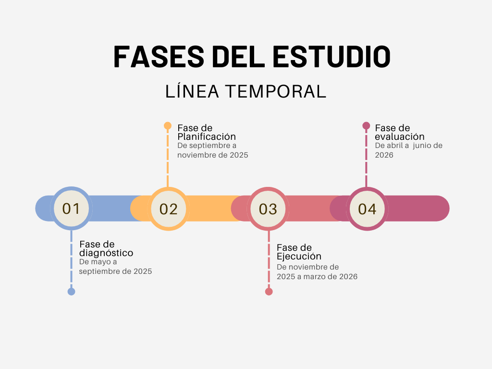
En cada uno de los centros, previo al día del ayuno, se presentó el proyecto tanto al alumnado como a sus familias y/o tutores legales, donde se explicó la importancia del mismo y de la participación de los alumnos con carácter voluntario. Se entregó el consentimiento informado a padres y madres para ser cumplimentado y enviado al Centro posteriormente.
Al igual que en el estudio anterior que realizamos en el IESO Vía Dalmacia en el curso 24-25, al alumnado se le incentivó con la entrega de un cheque regalo canjeable (25 euros por alumno) que los motivara a colaborar en el ayuno de móvil durante de 24 horas. El cheque canjeable fue gestionado desde la Dirección de cada centro educativo participante.
De los 328 participantes propuestos se comprometieron a realizar el estudio 125, un 38,1% de tasa de realización. Este hecho es destacable y pone de manifiesto que un 61,9% del grupo convocado rechazó participar, aun incentivándolos. Analizaremos al grupo que no participó en el estudio, las claves de su rechazo y cómo afecta a los resultados del estudio su decisión.
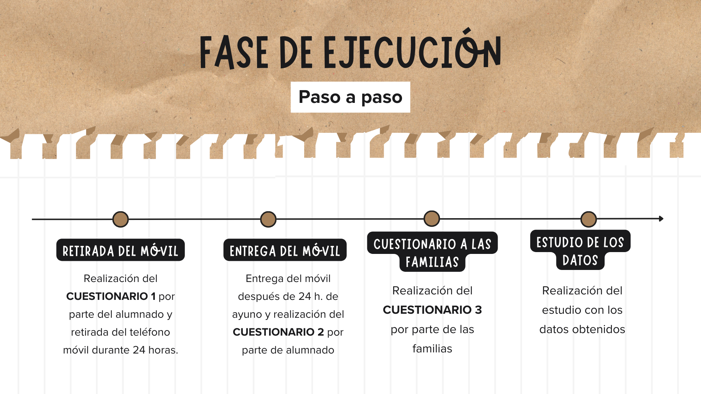
En el periodo del 20 de noviembre al 16 de diciembre de 2025, en los distintos centros y en horarios de clase, con la colaboración del profesorado de aula y la coordinación de los responsables del estudio se realizó el cuestionario previo (CUESTIONARIO 1) a la retirada del móvil a un total de 125 alumnos/as de 3º ESO en los 8 institutos participantes. (ANEXO 1)
El cuestionario previo está formado por 24 preguntas relacionadas con los hábitos del uso del teléfono móvil, redes sociales frecuentadas, sentimientos y emociones relacionadas con el uso del dispositivo por el adolescente, relaciones familiares y sociales derivadas del uso del móvil, etc. Para ello era necesaria la utilización y consulta de datos en el móvil in situ en el aula, como por ejemplo la consulta del número de horas - una media diaria de los últimos siete días - de uso del móvil, app más utilizadas, y otros datos objetivos que aporta el móvil del alumno a través de la consulta en los ajustes del teléfono.
Posteriormente y en cada caso se procedió a la retirada del smartphone, que quedó apagado y precintado en una bolsa identificada y custodiada por el equipo coordinador del proyecto hasta el día siguiente.
Veinticuatro horas después, en cada uno de los centros y en horario de clase, se procedió a desprecintar el móvil y entregarlo a cada alumno, realizando a continuación un cuestionario posterior a la entrega (CUESTIONARIO 2) a los estudiantes con un total de 10 preguntas; en el que recabamos datos sobre los sentimientos encontrados en los alumnos/as al carecer de móvil 24 horas, modificación en su comportamiento, relaciones sociales y familiares alternativas en ese día, notificaciones acumuladas durante el ayuno, etc. (ANEXO 2)
Finalmente se elaboró un tercer cuestionario (CUESTIONARIO 3) compuesto por 16 preguntas, que fue enviado a los padres y madres de los alumnos/as participantes, con la finalidad de realizar una valoración de las sensaciones y preocupaciones de los progenitores derivadas del mal uso de los móviles por sus hijos. En el caso de los tutores legales, se convocó a un total de 240 padres y madres del alumnado participante, y se recibieron un total de 108 cuestionarios, lo que representa una tasa de participación en el estudio del 45% de los cuales el 84,2% son madres y un 15,7% son padres. (ANEXO 3).
Además, se llevó a cabo un cruce de datos entre familias o tutores legales e hijos para poner de manifiesto desviaciones o distintas percepciones por los dos grupos de estudio. (ANÁLISIS DE CORRELACIÓN DE DATOS FAMILIAS - ALUMNADO)
5.- ANÁLISIS DE RESULTADOS
El análisis de resultados se plasmará en este estudio por áreas temáticas en las que se ha dividido para comprobar la incidencia del uso del móvil en todas ellas.
5.1.- Segmentación por sexo y entorno
Previo al estudio se ha realizado una segmentación del mismo por sexo y entorno en el que residen para comprobar la incidencia que estos dos factores tienen en los resultados y si existe desviaciones significativas entre ellos con respecto al grupo general.
El reparto de alumnado participante en el estudio por sexo ha sido muy equitativo.
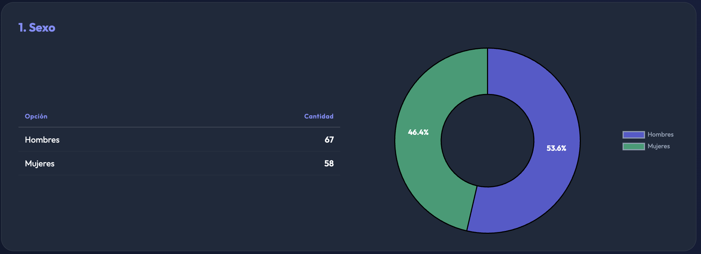
Los chicos participantes han representado un porcentaje ligeramente superior, un 53,6% al de sus compañeras de sexo femenino, que ha sido de un 46,4%.
En cambio el entorno de residencia ha estado muy virado hacia lo rural:
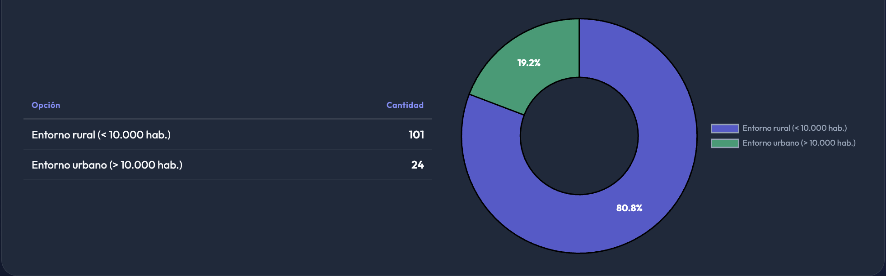
Prácticamente, cuatro de cada cinco alumnos participantes residen en poblaciones rurales, un 80,8% de los encuadrados, mientras que tan solo 19,2% de los alumnos participantes tienen su residencia principal en una ciudad.
En este estudio se ha establecido que se considera un entorno rural si la residencia principal de la familia está fijada en una localidad con una población menor de 10.000 habitantes.
En este sentido, los resultados segmentados por sexo o entorno presentan desviaciones significativas respecto al grupo general si existe ±10% respecto al 50% en respuestas segmentadas por sexo o ±10% respecto al 20% de entorno urbano y al 80% en entorno rural a respuestas segmentadas por lugar de residencia.
5.2.- Estado de ánimo respecto a la utilización del teléfono móvil
El 25,6%, aproximadamente 1 de cada 4 alumnos/as, siente nerviosismo o inquietud cuando no puede consultar su móvil. Esto sugiere una moderada dependencia emocional al móvil en la muestra general.
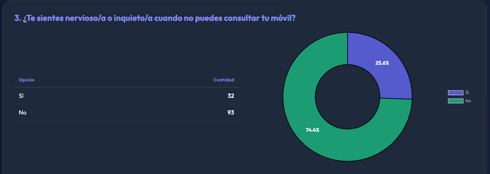
En cuanto a la segmentación por sexo observamos que las alumnas refieren más del triple de nerviosismo que los alumnos, lo cual indica una mayor dependencia o ansiedad asociada al móvil en el grupo femenino. Esta diferencia puede explicarse con un mayor uso comunicativo y social por parte de las chicas, con una mayor presión de las redes sociales sobre ellas.
En cuanto a la segmentación por entorno rural/urbano los resultados obtenidos no indican que el factor entorno tenga incidencia en un mayor nerviosismo por la ausencia del teléfono.
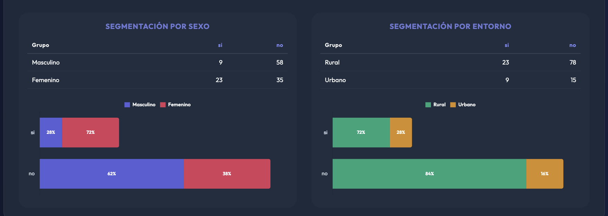
En el análisis de correlación entre los resultados obtenidos en el cuestionario al alumnado y el cuestionario a sus familias, observamos que el alumnado manifiesta más ansiedad o inquietud cuando no pueden consultar el móvil que la que perciben las familias en sus hijos/as. Esto sugiere que parte del malestar no siempre es visible desde fuera o que los adolescentes lo normalizan y no lo expresan abiertamente en casa. Podemos concluir que existe una discrepancia entre lo que sienten los alumnos y lo que perciben las familias.
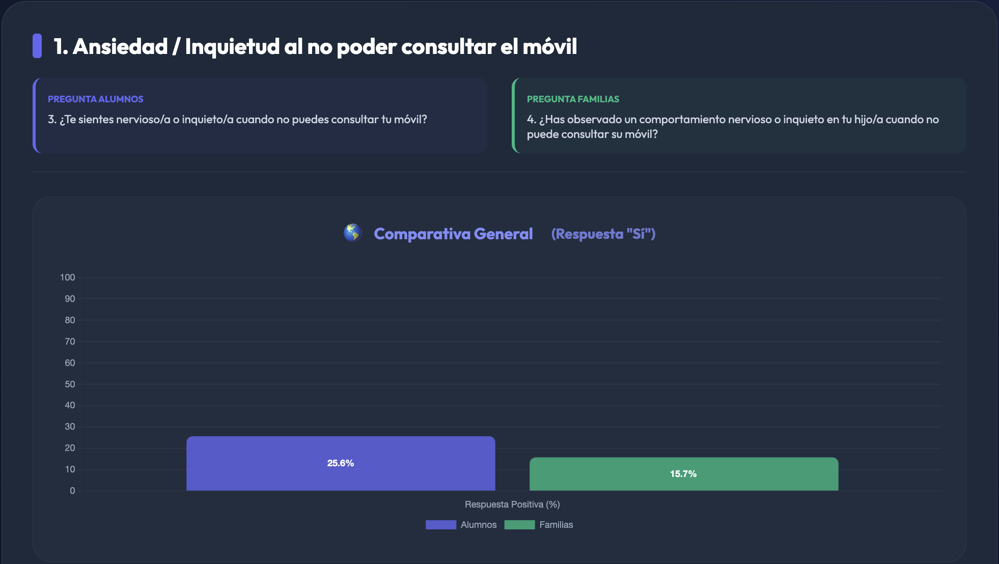
La consulta continua ante la llegada de notificaciones representa otro hábito entre los adolescentes. En este sentido, únicamente un 15,2% no comprueba las notificaciones, nunca o casi nunca, lo que muestra una alta dependencia informativa/social del móvil.
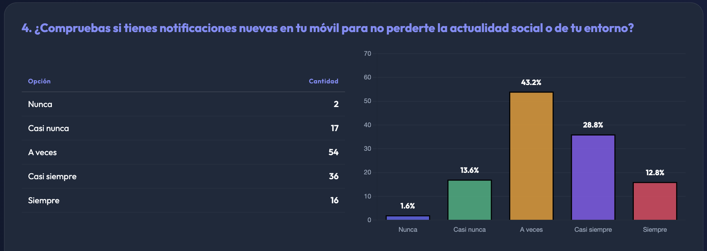
La segmentación por sexo nos indica que las alumnas comprueban con más frecuencia, por el mayor uso comunicativo.
En cuanto al entorno no hay datos que nos muestren diferencias de uso entre el alumnado rural y el urbano.
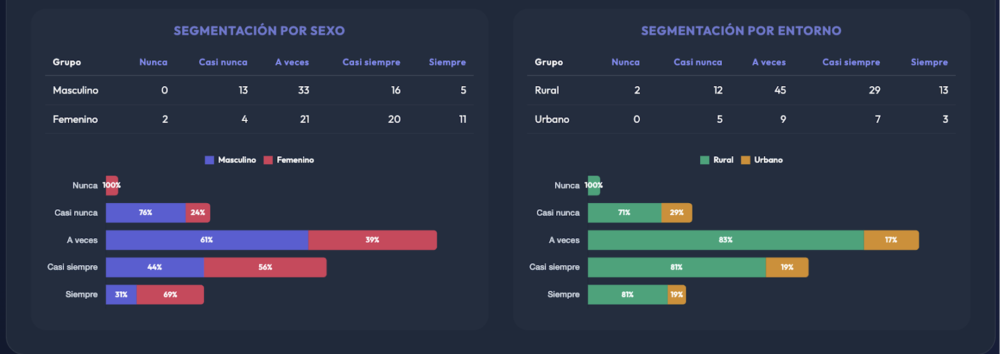
5.3.- Relaciones familiares
La gran mayoría (8 de cada 10 jóvenes) cree que podría interactuar más con su familia si usara menos el móvil, quedando demostrada la interferencia del móvil en la convivencia familiar, reconociendo que el móvil reduce el tiempo familiar.
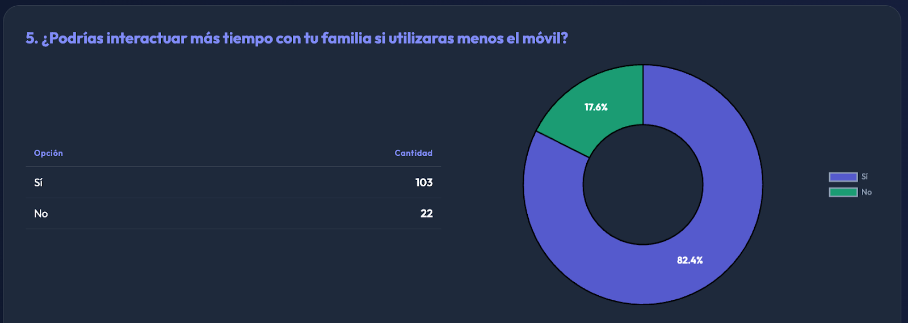
En este apartado tanto chicos como chicas muestran porcentajes similares y muy altos en relación al impacto familiar que provoca el uso excesivo del móvil. Además el fenómeno es transversal, no exclusivo de zonas urbanas o rurales.
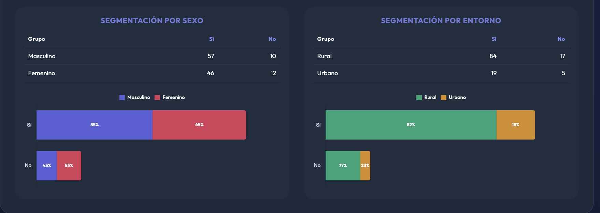
En cuanto a las familias entrevistadas, observamos que existe una coincidencia casi total entre alumnos y familias. Ambos reconocen de forma clara que el uso del móvil reduce el tiempo de interacción familiar.
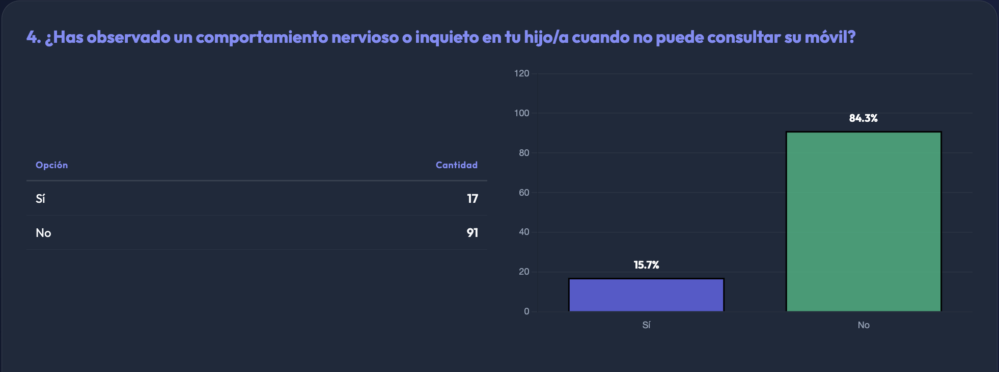
Aunque destaca que las familias perciben más el impacto del móvil en las hijas que en los hijos. Esta diferencia es relevante y sugiere una mayor preocupación familiar por el uso del móvil en las chicas.
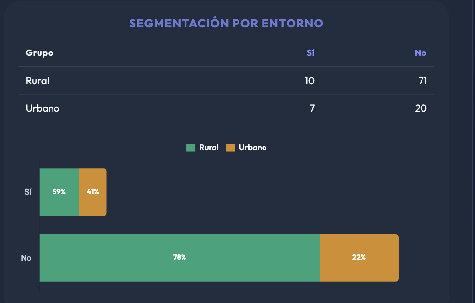
Respecto a los apercibimientos de la familia por el uso excesivo del móvil, los resultados están muy equilibrados, aproximadamente la mitad del alumnado encuestado reconoce que sí reciben corrección por parte de sus padres.
Esto indica que el uso excesivo del móvil es percibido como problemático en muchos hogares, y aunque muchos reconocen el impacto familiar, no todos reciben corrección directa de los padres.
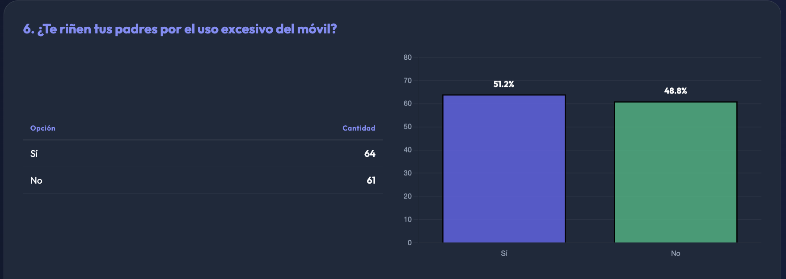
La segmentación por sexo y por entorno no indica ninguna tendencia significativa y se mantiene en los porcentajes similares a los globales.
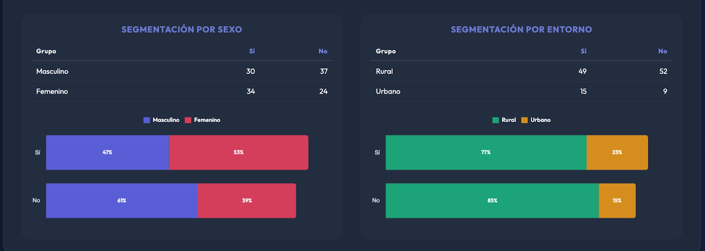
En el análisis de los datos obtenidos del cuestionario a las familias, muestran que el conflicto por el uso del móvil es frecuente y significativo. Las familias, independientemente del entorno rural o urbano, declaran altos niveles de conflicto, con diferencias poco significativas entre sexo, convirtiendo al móvil en un motivo recurrente de conflicto familiar.
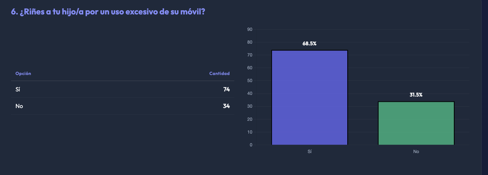
Solo 1 de cada 3 estudiantes tiene supervisión parental, y 2 de cada 3 no tienen control de contenidos, lo cual indica un bajo control familiar del uso de móvil.
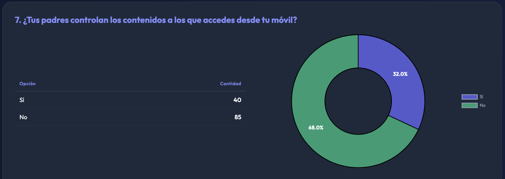
Esto unido a los resultados expuestos anteriormente indica que los padres corrigen el uso, están preocupados, pero no necesariamente supervisan adecuadamente. El control parental no depende del sexo ni del entorno, ambos grupos tienen supervisión similar y baja.
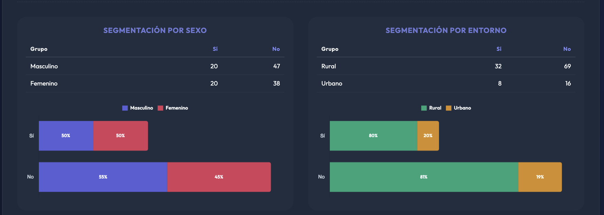
En el análisis de correlación con los datos obtenidos en los cuestionarios a las familias, observamos una brecha muy significativa entre el control declarado por las familias y el control percibido por el alumnado. Mientras siete de cada diez familias afirman ejercer control parental, solo tres de cada diez alumnos reconocen dicho control.
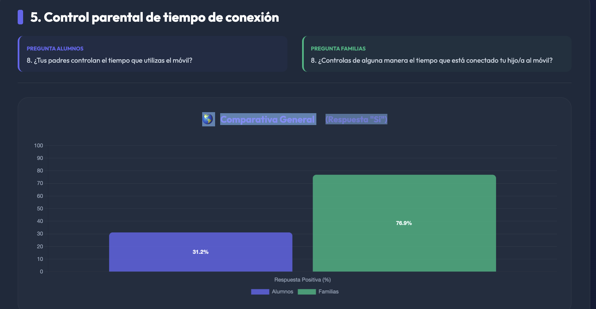
Las familias declaran ejercer control de forma muy similar independientemente del sexo y del entorno.
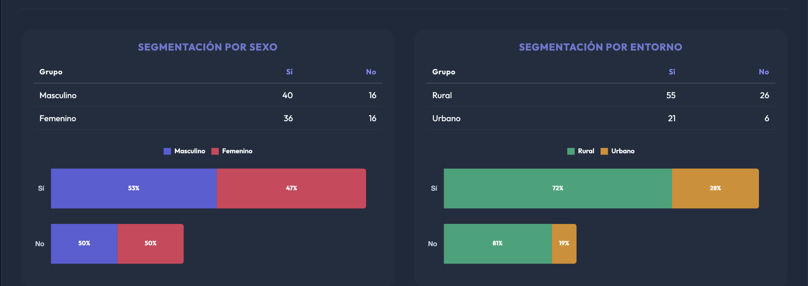
Una conclusión destacable es que las estrategias familiares se centran más en la corrección del uso (reñir) que en la prevención mediante supervisión y acompañamiento digital.
Solo un 31,2 % de los estudiantes tiene control parental sobre el tiempo de uso, y 2 de cada 3 no tienen restricción de tiempo.
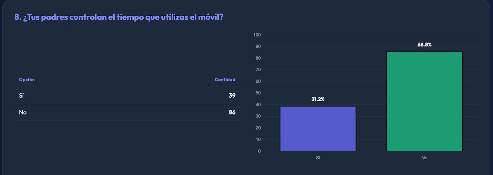
El control parental se mueve en porcentajes similares a los globales tanto en la segmentación por sexos como por entornos.
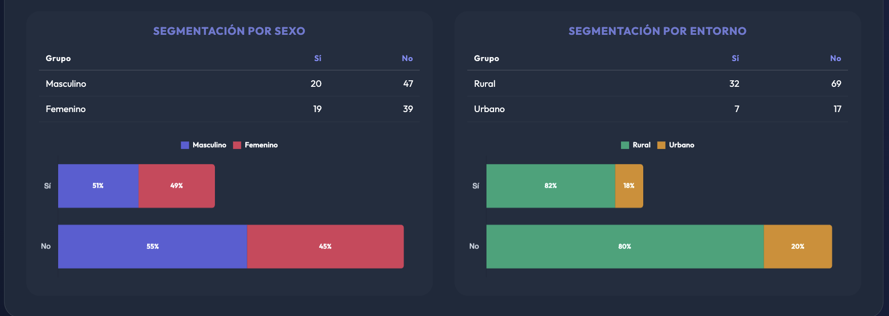
Los padres reaccionan o corrigen, pero no regulan tiempo ni contenidos.
Si analizamos la comparativa entre lo declarado por los adolescentes (en torno al 30% perciben control de tiempo) y lo percibido por las familias (más del 75% afirman ejercer ese control) concluimos que, existe una fuerte discrepancia entre lo que las familias creen controlar y lo que los hijos perciben realmente. Las familias controlan más el tiempo que los contenidos. Sin embargo, ambos tipos de control son poco percibidos por el alumnado.
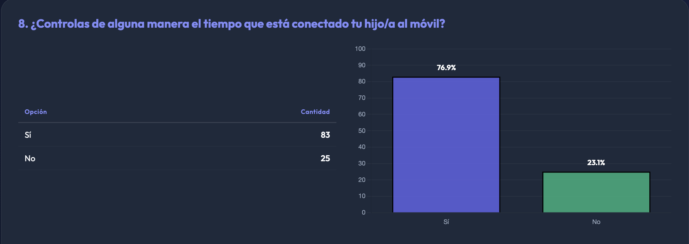
5.4. Salud física: señales de alerta
La presencia de molestias oculares no es solo un problema físico, sino un indicador clínico de uso problemático del móvil.
Basándonos en la distribución de las respuestas de los alumnos encuestados podemos identificar tres niveles de riesgo:
- Usuarios con molestias habituales (3,2 %): Representan a alumnos con mayor probabilidad de sufrir una adicción comportamental o dependencia clínica. En este grupo, la pérdida de control sobre el dispositivo puede suponer síntomas crónicos de fatiga visual.
- Usuarios con molestias ocasionales (23,2 %): Los alumnos que "a veces" padecen molestias se encuentran en una situación de uso intensivo o de riesgo. Son sujetos vulnerables que están empezando a experimentar las consecuencias físicas de una falta de higiene digital, como el exceso de tiempo frente a la pantalla.
- Usuarios sin molestias (73,6 %): Los alumnos restantes muestran, por ahora, un equilibrio biológico, aunque esto no excluye que puedan tener otros problemas invisibles como la dependencia emocional o la nomofobia.
9. ¿Padeces molestias en los ojos? — Resultado global
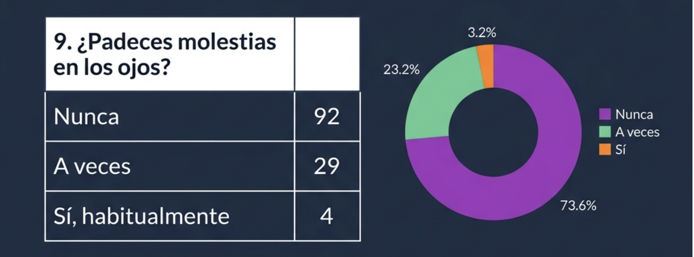
En relación a la segmentación por sexo, llama la atención el incremento del porcentaje de las adolescentes femeninas, un 75%, en los casos que habitualmente lo sufren, aunque no es significativo dado en escaso número de estudiantes que han indicado esta circunstancia.
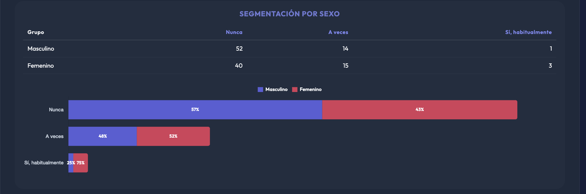
Tras analizar la correlación comparativa entre las respuestas de alumnos/as y familias obtenemos datos muy similares en los dos grupos encuestados, manifestando un 25% de los familiares que sus hijos/as padecen molestias en los ojos a veces o habitualmente frente al 26,4% de los adolescentes.
El análisis sobre el dolor o rigidez de cuello o espalda permite evaluar el impacto ergonómico y musculoesquelético derivado del uso intensivo del móvil, un fenómeno estrechamente vinculado a las adicciones digitales. La postura inclinada hacia adelante para consultar la pantalla genera una carga excesiva en las vértebras cervicales, lo que se traduce en dolor de cabeza, fatiga y rigidez de cuello. Al igual que las molestias oculares, este síntoma es un indicador de la pérdida de control sobre el tiempo de uso del dispositivo.
Según los datos del estudio un 56 % nunca muestra molestias en cuello y espalda, frente a un 44 % que sufre molestias a veces o habitualmente. Estas dolencias no se consideran síntomas aislados, sino indicadores de un patrón comportamental adictivo o de uso problemático. Los adolescentes que pasan más de 5 horas al día conectados presentan mayores índices de malestar físico y dificultades en su bienestar personal.
10. ¿Padeces dolor o rigidez de cuello o espalda? — Resultado global
Teniendo en cuenta la segmentación por sexo hay que destacar que de los alumnos/as que afirman sufrir dolores o rigidez de cuello habitualmente (9,6%), el 67% corresponde a adolescentes del sexo femenino frente al 33% masculino. Vuelven a ser datos poco significativos debido al escaso número de estudiantes que han contemplado esta opción, pero sí puede observarse un inicio de tendencia más acentuada en las adolescentes femeninas con molestias en los ojos, dolores y molestias de espalda de forma habitual.
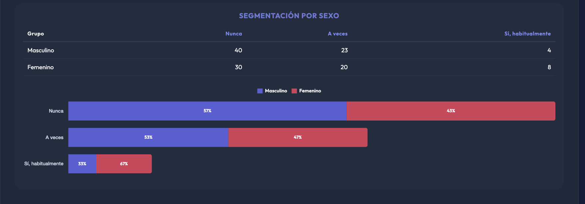
Tras analizar los datos obtenidos de la encuesta realizada a las familias, cabe destacar un ligero incremento en la percepción de los progenitores con respuesta afirmativa y a veces con un 51,9% frente al 44% manifestado por los estudiantes.
Aumenta significativamente cuando atendemos a la segmentación por sexo en las encuestas a progenitores pues el porcentaje de niñas que consideran que tienen molestias en cuello y espalda a veces o habitualmente alcanza el 61,5%.
5.5. Ciberacoso
La interpretación si el alumnado se ha sentido en alguna ocasión víctima de burlas e insultos es esencial para medir el impacto del dispositivo en la convivencia y el bienestar social. Esta pregunta no solo busca un dato estadístico, sino que actúa como una señal de alerta temprana. Una respuesta positiva indica que el dispositivo ha dejado de ser una herramienta de comunicación para convertirse en un foco de distrés psicológico.
La información obtenida busca identificar situaciones de maltrato entre iguales en plataformas como WhatsApp, Instagram o TikTok. Su objetivo es obtener una "visión clara y veraz" del papel del móvil en las interacciones sociales, yendo más allá del simple uso técnico para evaluar la seguridad digital del menor.
De los alumnos encuestados, el 7,2% reconocen haber sido víctimas de burlas o insultos. Las fuentes indican que la incidencia del ciberacoso suele aumentar con la edad, registrándose una participación especialmente alta en el grupo de 13-14 años.
11. ¿Te has sentido en alguna ocasión víctima de burlas, insultos... a través de alguna red social (Whatsapp, Instagram, TikTok...)?
| Opción | Cantidad |
|---|---|
| Sí | 9 |
| No | 116 |
Aunque la mayoría (92,8%) no manifiesta victimización, las fuentes subrayan que el acoso a través de tecnologías digitales no es un hecho aislada, sino parte de un clima de violencia entre preadolescentes y adolescentes.
El acoso "cara a cara" (offline) sigue siendo el más frecuente, pero el digital es más difícil de detectar para los adultos.
La interpretación de estos casos debe considerar el patrón de uso del dispositivo, ya que según los estudios existe una relación directa entre el tiempo de uso y los conflictos. Aunque el 7,2% parezca una cifra minoritaria, representa a un grupo de alumnos en alto riesgo de exclusión y sufrimiento psicológico.
De los casos en los que reconocen haber sufrido ciberacoso es muy interesante analizar la segmentación por sexo, ya que el 67% corresponde a género masculino frente al 33% del femenino.
SEGMENTACIÓN POR SEXO
| Grupo | Sí | No |
|---|---|---|
| Masculino | 6 | 61 |
| Femenino | 3 | 55 |
SEGMENTACIÓN POR ENTORNO
| Grupo | Sí | No |
|---|---|---|
| Rural | 7 | 84 |
| Urbano | 2 | 22 |
Por otro lado hay que destacar la "Brecha de Silencio" con las familias como un aspecto crítico al interpretar este resultado por la probable falta de conocimiento de los padres. En la encuesta posterior realizada a los padres evidenciamos que tan solo el 4,6% de los progenitores es conocedor del bulling sufrido por sus hijos a través de redes sociales. Los jóvenes ocultan ser víctimas por miedo a que les retiren el móvil como medida de protección o por búsqueda de autonomía emocional.
🌎 Comparativa General (Respuesta "Sí")
11. ¿Te has sentido en alguna ocasión víctima de burlas, insultos... a través de alguna red social (Whatsapp, Instagram, TikTok...)?
11. ¿Eres conocedor/a de algún tipo de burla o insulto hacia tu hijo/a por parte de amigos o compañeros a través de redes sociales?
El análisis de la posición contraria, o sea, si la burla o el insulto a través de la redes sociales con la ayuda del móvil ha salido de ellos permite identificar la prevalencia de conductas de agresión digital en la muestra. De los alumnos encuestados, un 6,4%, reconoce haber ejercido comportamientos de burla o insulto hacia compañeros en redes sociales como WhatsApp, Instagram o TikTok, frente al 93,6% que ha respondido negativamente.
Hay que recordar que en el estudio piloto inicial realizado en el año 2025 en el IESO Vía Dalmacia de Torrejoncillo sobre ayuno digital, el 100% de los alumnos manifestó no haber realizado nunca este tipo de conductas. El hecho de que en esta nueva muestra un 6,4% lo admita sugiere una mayor sinceridad o una mejor comprensión del anonimato de la encuesta.
Las fuentes señalan que a los jóvenes les suele costar reconocer estas acciones en un cuestionario, ya sea por el rechazo social o porque ni siquiera son conscientes de que sus actos constituyen acoso.
La conducta agresiva en línea no es un hecho aislado, sino que está estrechamente ligada a la falta de autorregulación digital. Al igual que la pregunta anterior, la segregación por sexos aumenta en el sexo masculino con un 67% de respuestas afirmativas frente al 33% en el sexo femenino.
SEGMENTACIÓN POR SEXO (AGRESIÓN)
| Grupo | Sí | No |
|---|---|---|
| Masculino | 5 | 62 |
| Femenino | 3 | 55 |
SEGMENTACIÓN POR ENTORNO (AGRESIÓN)
| Grupo | Sí | No |
|---|---|---|
| Rural | 5 | 96 |
| Urbano | 3 | 21 |
El análisis de, si como terceras personas, tienen conocimiento de burlas o insultos a algún amigo/a o compañero/a revela una dimensión crítica de la convivencia digital tras la interpretación de los resultados. La figura del observador o testigo, que es significativamente mayor que la de las víctimas o agresores directos. Cabe destacar los siguientes aspectos:
1. Prevalencia del testigo digital (17,6%): De los alumnos encuestados, el 17,6% manifiesta conocer casos de acoso, lo cual contrasta con la implicación directa ya que el porcentaje obtenido es notablemente superior al de alumnos que se reconocen como víctimas (7,2%) o como agresores (6,4%). Además se puede apreciar un efecto de amplificación tras comprobar que el hecho de que casi el 18% del alumnado sea consciente de estas situaciones indica que el ciberacoso no ocurre en un entorno privado, sino que tiene una alta visibilidad social dentro del grupo de pares.
2. Sinceridad y percepción de riesgo: Los resultados sugieren que los alumnos son más sinceros al reportar hechos que afectan a terceros que al reconocer conductas propias. Mientras que en las encuestas previas el 93,6% negaba ser agresor, la presencia de testigos (17,6%) confirma que el "clima de violencia" digital es una realidad tangible que los adultos a menudo no logran detectar.
3. La "ceguera" parental y la brecha de comunicación: Al igual que en las preguntas sobre victimización, existe una desconexión total con el entorno familiar:
- Las encuestas realizadas a los familiares indican que un 95,4% de los padres desconocía si sus hijos estaban siendo víctimas de insultos o burlas.
- Esta invisibilidad ante los padres impide que se tomen medidas proactivas de protección, dejando la resolución del conflicto exclusivamente en manos de los adolescentes, quienes a menudo normalizan estas conductas al observarlas de forma recurrente.
13. ¿Tienes conocimiento de burlas o insultos a algún amigo/a o compañero/a de clase a través de redes sociales (Whatsapp, Instagram, TikTok...)?
| Opción | Cantidad |
|---|---|
| Sí | 22 |
| No | 103 |
El resultado de un 17,6% de observadores alerta sobre una "bolsa de conocimiento" de violencia digital que permanece oculta para las familias. Esta cifra valida la necesidad de que los centros educativos actúen no solo sobre el agresor y la víctima, sino sobre la comunidad de testigos, para romper la ley del silencio y fomentar una convivencia digital saludable.
La segmentación por sexo en este apartado no aporta ninguna información relevante ya que los porcentajes de respuestas afirmativas y negativas están igualados.
Los datos obtenidos sobre el conocimiento de la publicación en alguna ocasión de fotos o vídeos sin su consentimiento revelan una problemática significativa sobre la privacidad y la convivencia digital.
El 18,4% de los estudiantes, casi uno de cada cinco jóvenes, indica que ha visto vulnerada su soberanía digital. En el marco del estudio, esta conducta se clasifica directamente como una forma de ciberacoso o violencia digital, que puede tener un impacto insidioso en la convivencia.
14. ¿Han publicado en alguna ocasión fotos o vídeos tuyos sin tu consentimiento?
| Opción | Cantidad |
|---|---|
| Sí | 23 |
| No | 102 |
Para los adolescentes, la fotografía es la herramienta tecnológica principal para mantener vínculos afectivos y relaciones sociales. La principal motivación de los jóvenes no es solo capturar el momento, sino compartirlo de forma inmediata a través de cualquier medio del móvil. Esta inmediatez, sumada a la necesidad de aceptación social, aumenta la probabilidad de que las imágenes se difundan sin evaluar las consecuencias éticas o la falta de consentimiento de los implicados.
Los resultados pueden explicarse a través del fenómeno de la desinhibición en la red:
- Los estudios muestran que el comportamiento de los alumnos es más desinhibido en redes sociales y aplicaciones de mensajería que en su vida diaria.
- Esta pérdida de filtros conductuales facilita que los compañeros publiquen fotos de terceros de forma impulsiva.
Por otro lado cabe hacer referencia a la "brecha de silencio" con el entorno adulto. En nuestro estudio este tipo de acciones son consideradas violencia o ciberbullying, contrastando los resultados de las encuestas en las que tan solo un 4,6% de los padres/madres afirman conocer algún tipo de burla o insulto hacia sus hijos a través de las redes sociales, frente al 18,4% de los adolescentes que manifiestan la publicación de fotos sin su consentimiento.
En relación a la segmentación por sexo o entorno no se aprecian datos significativos en el estudio.
5.6. Acceso al móvil
El 80% de los alumnos-as tienen el móvil en su habitación mientras duermen. Este hábito puede afectar al rendimiento académico, al estado de ánimo y a la salud, ya que dormir menos horas o con un sueño de peor calidad dificulta la concentración, la memoria y el bienestar general.
Además, se evidencia que los adolescentes no tienen regulado el uso del móvil por parte de sus padres, no existiendo límites claros en los horarios de uso.
Cada vez más expertos recomiendan dejar el móvil fuera de la habitación o apagarlo antes de acostarse, para favorecer un descanso más profundo y saludable.
16. ¿Tienes el móvil en tu habitación mientras duermes? — Resultado global
| Opción | Cantidad |
|---|---|
| Sí | 100 |
| No | 25 |
El 17,6% de los adolescentes se conecta habitualmente al móvil después de la medianoche, mientras que un 47,2% reconoce que a veces se conecta en esta franja horaria. Estos datos ponen de manifiesto que casi dos tercios de los jóvenes mantienen contacto con su dispositivo en horas destinadas al descanso.
Este comportamiento suele estar relacionado con el uso de redes sociales, aplicaciones de mensajería instantánea, vídeos o juegos, lo que provoca una interrupción del ciclo natural del sueño. La exposición a la luz azul de las pantallas retrasa la producción de melatonina, la hormona que regula el sueño, dificultando la conciliación del descanso y reduciendo su calidad.
La conexión nocturna también favorece la fragmentación del sueño, ya que los adolescentes pueden despertarse para revisar notificaciones o responder mensajes. Como consecuencia, se incrementan los niveles de cansancio durante el día, disminuye la capacidad de atención en clase y puede verse afectado el rendimiento académico.
Además, este hábito puede generar dependencia del móvil y aumentar la ansiedad, ya que los jóvenes sienten la necesidad de estar siempre disponibles. Por ello, estos resultados evidencian la importancia de promover hábitos digitales saludables, como apagar el móvil antes de dormir o dejarlo fuera de la habitación, con el fin de mejorar la calidad del sueño y el bienestar general.
17. ¿Te conectas con el móvil después de la medianoche (0:00 h.)? — Resultado global
| Opción | Cantidad |
|---|---|
| Nunca | 44 |
| A veces | 59 |
| Sí, habitualmente | 22 |
En cuanto a la segmentación por sexo y entorno, se registra un incremento de 10 puntos porcentuales en el uso del móvil después de la medianoche en el entorno urbano en comparación con el entorno rural.
SEGMENTACIÓN POR SEXO
| Grupo | Nunca | A veces | Sí, habitual |
|---|---|---|---|
| Masculino | 25 | 31 | 11 |
| Femenino | 19 | 28 | 11 |
SEGMENTACIÓN POR ENTORNO
| Grupo | Nunca | A veces | Sí, habitual |
|---|---|---|---|
| Rural | 37 | 49 | 15 |
| Urbano | 7 | 10 | 7 |
Enlazando con el cuestionario posterior, el 47,2% de los menores afirma haber conciliado mejor el sueño cuando no tiene el móvil cerca, lo que evidencia una relación directa entre el uso del dispositivo y las dificultades para dormir. Este dato sugiere que la presencia del teléfono en la habitación actúa como un factor de distracción que retrasa el inicio del descanso y favorece hábitos nocturnos poco saludables, creando una rutina de descanso más estable y relajada, permitiendo que el menor se desconecte mentalmente antes de dormir. Esto no solo mejora la duración y la profundidad del sueño, sino que también tiene efectos positivos en el estado de ánimo, la concentración y el rendimiento académico.
¿Has conciliado mejor el sueño tras 24h sin móvil? — Resultado global
| Opción | Cantidad |
|---|---|
| Sí | 59 |
| No | 66 |
Al preguntar a los padres si creen que sus hijos se conectan al teléfono móvil después de medianoche, los resultados muestran una distribución llamativa. El 51,9% de los padres afirma que sus hijos nunca se conectan a esas horas, mientras que un 48,1% considera que lo hacen a veces. Ningún progenitor seleccionó la opción “sí, habitualmente” (0%).
Existe una brecha en el conocimiento de los padres, pues más de la mitad de las familias perciben que no existe un uso nocturno del móvil, aunque casi la mitad reconoce una conectividad nocturna ocasional después de medianoche.
¿Crees que tu hijo/a se conecta con el móvil después de medianoche? — Percepción de las Familias
| Opción | Cantidad |
|---|---|
| Nunca | 56 |
| A veces | 52 |
| Sí, habitualmente | 0 |
El 79,2 % de los menores no utiliza el teléfono móvil durante las comidas, un dato altamente positivo que refleja la existencia de hábitos familiares saludables y una adecuada regulación del uso de pantallas en contextos cotidianos. Este resultado sugiere que, en una mayoría significativa de los hogares, se preserva el momento de la comida como un espacio de interacción social, comunicación familiar y desconexión tecnológica.
Diversos estudios en el ámbito de la psicología y la educación señalan que las comidas compartidas sin dispositivos electrónicos favorecen el desarrollo emocional, mejoran la comunicación intrafamiliar y fortalecen los vínculos afectivos. Además, este hábito se asocia con una mayor conciencia alimentaria, una mejor regulación de la conducta y una menor probabilidad de desarrollar dependencia a las pantallas.
Por otro lado, el 20,8 % restante que sí utiliza el móvil durante las comidas representa un grupo de riesgo en cuanto a la interiorización de normas digitales y a la posible interferencia en la socialización. La exposición a pantallas en estos momentos puede disminuir la calidad de la interacción, reducir la atención plena y fomentar conductas de aislamiento, así como una mayor dificultad para establecer rutinas equilibradas entre el entorno digital y el presencial.
En conjunto, estos datos ponen de manifiesto la importancia de seguir promoviendo normas familiares claras sobre el uso responsable de la tecnología. Fomentar espacios libres de pantallas, como las comidas, contribuye no solo al bienestar emocional de los menores, sino también a la consolidación de hábitos saludables que impactan positivamente en su desarrollo integral.
¿Utilizas normalmente el teléfono móvil durante las comidas? — Resultado global
| Opción | Cantidad |
|---|---|
| Sí | 26 |
| No | 99 |
El análisis comparativo entre el entorno urbano y el entorno rural muestra diferencias relevantes en el uso del teléfono móvil durante las comidas por parte de los adolescentes. En el entorno urbano, el 37,5 % de los menores declara utilizar el móvil durante este momento, frente al 16,8 % registrado en el entorno rural. Estos datos indican que el uso del dispositivo en las comidas es más del doble de frecuente en contextos urbanos.
Esta diferencia puede explicarse, en primer lugar, por una mayor exposición a estímulos digitales en el entorno urbano. Las ciudades suelen caracterizarse por ritmos de vida más acelerados y una mayor fragmentación de los tiempos familiares, lo que reduce las oportunidades de interacción prolongada. En este contexto, el uso del móvil durante las comidas puede convertirse en una forma habitual de evasión o de mantenimiento del contacto social externo, incluso en presencia de la familia.
Por el contrario, en el entorno rural se observan dinámicas familiares más centradas en la convivencia presencial y en la participación en actividades comunitarias. La menor oferta de estímulos digitales inmediatos y un mayor peso de las tradiciones familiares favorecen la preservación de las comidas como un espacio de comunicación directa.
En conjunto, estos resultados ponen de relieve la necesidad de adaptar las estrategias de educación digital a las características de cada contexto, fomentando especialmente en el entorno urbano la creación de espacios libres de pantallas que refuercen la interacción familiar y el bienestar de los menores.
SEGMENTACIÓN POR SEXO
| Grupo | Sí | No |
|---|---|---|
| Masculino | 15 | 52 |
| Femenino | 11 | 47 |
SEGMENTACIÓN POR ENTORNO
| Grupo | Sí | No |
|---|---|---|
| Rural | 17 | 84 |
| Urbano | 9 | 15 |
El 85,2% de los padres encuestados afirman que sus hijos no utilizan el móvil durante las comidas, mientras que solo el 14,8% indican que sí lo hacen. Estos resultados muestran que, en la mayoría de los hogares encuestados, el uso del teléfono móvil durante las comidas no es una práctica habitual.
Este dato resulta especialmente relevante si se compara con las respuestas proporcionadas por los propios hijos, ya que ambas coinciden en gran medida. Esta coincidencia sugiere que existe una percepción compartida entre padres e hijos sobre las normas familiares relacionadas con el uso del móvil en la mesa, lo que puede indicar la presencia de límites claros y un cierto grado de control parental.
¿Utiliza tu hijo/a normalmente el móvil durante las comidas? — Percepción de las Familias
| Opción | Cantidad |
|---|---|
| Sí | 16 |
| No | 92 |
La siguiente tabla comparativa refleja cómo el 20,8% del alumnado reconoce que sí utiliza el móvil durante las comidas, mientras que solo el 14,8% considera que su hijo/a utiliza el móvil en ese momento. Esta diferencia de seis puntos porcentuales sugiere que los estudiantes perciben un uso del móvil durante las comidas algo mayor del que perciben sus padres. Este desajuste puede interpretarse como una diferencia en la percepción del comportamiento real, o bien como la existencia de usos puntuales que no siempre son detectados por los adultos.
A pesar de esta ligera discrepancia, los datos de ambos colectivos coinciden en señalar que el uso del móvil en la mesa no es una práctica habitual en la mayoría de los hogares. Este resultado se considera muy positivo, ya que las comidas representan un espacio clave para la comunicación familiar, el establecimiento de vínculos y el desarrollo de habilidades sociales.
Comparativa: Uso del móvil en las comidas — Alumnado vs Familias
| Colectivo | Uso (%) |
|---|---|
| Alumnado | 20,8% |
| Familias | 14,8% |
El 58,4 % de los adolescentes declara tener el teléfono móvil a mano mientras realiza las tareas escolares, un dato que evidencia la fuerte integración del dispositivo en su rutina diaria y su constante accesibilidad. Esta disponibilidad permanente supone un factor de riesgo en términos de concentración, rendimiento académico y autorregulación, ya que incrementa la probabilidad de interrupciones frecuentes a través de notificaciones, mensajes o redes sociales.
Diversas investigaciones en el ámbito de la psicología cognitiva han demostrado que la simple presencia del teléfono móvil, incluso cuando no se utiliza de forma activa, reduce la capacidad de atención sostenida y aumenta la carga cognitiva. El esfuerzo necesario para resistir la tentación de consultar el dispositivo genera un fenómeno conocido como “atención dividida”, que dificulta la consolidación de la información y prolonga el tiempo necesario para completar las tareas.
Asimismo, este hábito puede fomentar conductas de multitarea digital, caracterizadas por la alternancia constante entre actividades académicas y contenidos digitales. Este patrón se asocia con una menor calidad del aprendizaje, mayor fatiga mental y una percepción distorsionada del tiempo dedicado al estudio.
En términos educativos, este dato subraya la necesidad de promover estrategias de autorregulación y normas claras sobre el uso de dispositivos durante el estudio. Fomentar espacios y momentos libres de móviles contribuye a mejorar la concentración, el rendimiento académico y el desarrollo de hábitos de estudio más saludables y eficientes.
¿Sueles tener el teléfono móvil a mano mientras haces las tareas de clase? — Resultado global
| Opción | Cantidad |
|---|---|
| Sí | 73 |
| No | 52 |
La segmentación por sexo revela diferencias en la disponibilidad del teléfono móvil durante la realización de las tareas escolares. El 64 % de los chicos declara tener el móvil a mano mientras realiza tareas escolares, frente al 51 % de las chicas. Esta diferencia de trece puntos porcentuales indica una mayor exposición de los varones a posibles distracciones digitales en el contexto académico.
Las chicas suelen mostrar una mayor conciencia sobre la organización del tiempo y la autorregulación en contextos escolares, lo que podría explicar una mayor disposición a alejar el móvil durante el estudio. Asimismo, investigaciones en psicología educativa sugieren que las adolescentes presentan, en promedio, mayores niveles de control atencional y planificación, factores que favorecen una gestión más responsable del uso del dispositivo.
En conjunto, los datos subrayan la importancia de diseñar intervenciones educativas que tengan en cuenta las particularidades de cada grupo, promoviendo estrategias de autorregulación y uso consciente de la tecnología que favorezcan la concentración y el rendimiento académico.
SEGMENTACIÓN POR SEXO
| Grupo | Sí | No |
|---|---|---|
| Masculino | 43 | 24 |
| Femenino | 30 | 28 |
En la siguiente gráfica se comparan las respuestas del alumnado y de sus familias. Los resultados muestran una diferencia significativa entre ambos colectivos.
Por un lado, el 58,4% del alumnado reconoce que tiene el móvil a mano mientras hace los deberes, frente al 43,5% de los progenitores que consideran que su hijo/a tiene el móvil cerca durante las tareas. Esta diferencia de casi 15 puntos porcentuales sugiere que el alumnado es más consciente de la presencia real del dispositivo durante el estudio, mientras que las familias tienden a subestimar este comportamiento. Esto puede deberse a que el uso del móvil se realiza de manera discreta o en espacios donde la supervisión adulta es menor.
En conjunto, los datos ponen de manifiesto la necesidad de reforzar pautas claras sobre el uso del móvil durante el tiempo de estudio, así como de fomentar hábitos de autorregulación y acompañamiento familiar para promover un entorno de aprendizaje más adecuado.
Comparativa: Móvil a mano durante el estudio — Alumnado vs Familias
| Colectivo | Sí (%) |
|---|---|
| Alumnado | 58,4% |
| Familias | 43,5% |
Al retirar el dispositivo el 50,4% de los alumnos sintió que se concentró mejor en sus tareas escolares.
Si se compara con la situación previa, donde el 58,4% de los alumnos reconocía tener el móvil a mano mientras realizaba sus tareas, se puede inferir que la eliminación de este elemento potencialmente distractor ha tenido un efecto positivo moderado, ya que aproximadamente la mitad del alumnado percibe un aumento en su capacidad de concentración.
En conjunto, los datos ponen de manifiesto que la retirada del dispositivo contribuye a mejorar la concentración en una parte del alumnado, pero no constituye una solución única ni universal, por lo que sería recomendable complementar esta medida con estrategias educativas orientadas al desarrollo de hábitos de estudio y gestión de la atención.
¿Te has concentrado mejor en tus tareas tras 24h sin móvil? — Resultado global
| Opción | Cantidad |
|---|---|
| Sí | 63 |
| No | 62 |
5.7. Contenidos
El teléfono móvil se ha consolidado como una herramienta indispensable en la vida diaria de los jóvenes, no solo como medio de comunicación, sino también como espacio de socialización, entretenimiento, aprendizaje y construcción de identidad. El análisis del uso de aplicaciones móviles permite comprender mejor sus intereses, hábitos y dinámicas sociales.
De acuerdo con los resultados obtenidos en este estudio, el orden de prioridad de las aplicaciones más utilizadas por los jóvenes es el siguiente:
20. Ranking Prioritario de Aplicaciones (Puntuación Ponderada)
| Aplicación | Puntos |
|---|---|
| 498 | |
| Tik-Tok | 496 |
| 428 | |
| YouTube | 255 |
| Otras | 118 |
| Juegos | 85 |
1. Instagram y TikTok: liderazgo compartido
Instagram y TikTok ocupan conjuntamente el primer lugar, lo que evidencia que ambas plataformas cumplen funciones complementarias en la vida digital de los jóvenes.
Instagram destaca por su enfoque en la imagen, la estética y la construcción de una identidad digital. Permite compartir experiencias, interactuar con pares, seguir tendencias e influencers, y recibir retroalimentación constante. TikTok, por su parte, se centra en el entretenimiento rápido y creativo. Su algoritmo personalizado facilita el acceso a contenidos afines a los intereses de cada usuario, fomentando una alta frecuencia de uso.
Que ambas aplicaciones tengan el mismo porcentaje de preferencia indica que los jóvenes no eligen sólo una forma de consumo digital, sino que combinan la autoexpresión (Instagram) con el entretenimiento viral (TikTok).
Liderazgo por Sexo (TikTok vs Instagram)
| Grupo | TikTok | |
|---|---|---|
| Masculino | 272 | 257 |
| Femenino | 224 | 241 |
Los chicos priorizan ligeramente TikTok (272) sobre Instagram (257), mientras que las chicas prefieren Instagram (241) frente a TikTok (224).
2. WhatsApp: comunicación funcional y constante
En segundo lugar se sitúa WhatsApp, una herramienta esencial para la comunicación diaria. Su uso está más asociado a funciones prácticas que a ocio: coordinación académica, organización de actividades, comunicación familiar y contacto con grupos de amigos. Su importancia radica en la inmediatez del mensaje, la facilidad de uso y la posibilidad de crear grupos de estudio o trabajo.
3. YouTube: entretenimiento y aprendizaje
YouTube ocupa el cuarto lugar, siendo una plataforma híbrida que combina diversión y educación. Los jóvenes la utilizan para escuchar música, ver creadores de contenido, seguir tutoriales y reforzar aprendizajes escolares. A diferencia de TikTok, YouTube permite un consumo más prolongado y reflexivo.
4. Otras aplicaciones
En esta categoría se incluyen plataformas como Spotify, Snapchat, Facebook, X (Twitter), Twitch, entre otras. Aunque no son prioritarias, responden a intereses específicos como escuchar música, informarse o seguir transmisiones en vivo.
5. Juegos: menor prioridad
Los juegos móviles ocupan el último lugar en el orden de preferencia. Esto no significa que no sean relevantes, sino que compiten con aplicaciones sociales que ofrecen interacción constante. Los juegos se utilizan principalmente como forma de distracción o relajación, pero no constituyen el eje central del uso del móvil.
El orden de prioridad de las aplicaciones móviles entre los jóvenes refleja una clara inclinación hacia plataformas que favorecen la interacción social, la creatividad y el consumo rápido de contenido con gratificación inmediata. El liderazgo compartido entre Instagram y TikTok confirma que la juventud actual combina la necesidad de expresarse con el deseo de entretenimiento inmediato, mientras que WhatsApp y YouTube cumplen funciones más prácticas y educativas dentro de su vida digital.
En España se está planteando limitar el acceso de los menores a determinadas aplicaciones móviles, especialmente redes sociales, siguiendo el ejemplo de otros países que ya han adoptado medidas similares. El objetivo de la propuesta es proteger a los menores y garantizar un entorno digital más seguro. Para ello, se prevé implantar sistemas de verificación de edad más estrictos en las plataformas. Asimismo, se busca aumentar la responsabilidad de las empresas tecnológicas en la protección de sus usuarios más jóvenes. No obstante, el debate continúa abierto, ya que algunos sectores consideran que la educación digital es más efectiva que la prohibición. En cualquier caso, la iniciativa refleja una preocupación creciente por el bienestar digital de la juventud.
Al retirar el móvil a los menores, se aprecia en la gráfica que no dejan de utilizar las tecnologías. Sólo el 24% afirma no haber utilizado un dispositivo alternativo durante las 24 horas del ayuno digital. Esta "sustitución" evidencia que la necesidad de conectividad trasciende al terminal físico, trasladándose a otros soportes disponibles en el hogar.
¿Has utilizado otro medio tecnológico durante las 24h sin móvil? — Resultado Global
| Opción | Cantidad |
|---|---|
| Sí (Usó sustitutos) | 95 |
| No (Desconexión) | 30 |
Dispositivos Sustitutos utilizados (N=125)
| Dispositivo | Cant. | % |
|---|---|---|
| PC/Portátil | 65 | 52,0% |
| Smart TV | 58 | 46,4% |
| Consola | 34 | 27,2% |
| Tablet | 22 | 17,6% |
| Otro móvil | 12 | 9,6% |
| Ninguno | 30 | 24,0% |
Ante esta pregunta relacionada con jugar a videojuegos desde el móvil los resultados obtenidos muestran que el uso lúdico del teléfono móvil está ampliamente extendido entre los adolescentes participantes.
Solo un 16,8% afirma que nunca utiliza el móvil para jugar a videojuegos, lo que indica que una minoría se mantiene al margen de este tipo de actividades digitales. En contraste, más de la mitad, un 52,8%, declara hacerlo a veces, lo que sugiere que el uso de videojuegos forma parte de su ocio de manera ocasional, sin constituir una práctica constante.
Por otro lado, un 30,4% reconoce que juega habitualmente con su móvil. Este porcentaje resulta especialmente relevante, ya que implica que casi uno de cada tres adolescentes integra el juego digital en su rutina diaria o frecuente.
En conjunto, los datos reflejan que el 83,2% de los adolescentes juega al menos ocasionalmente con su móvil, lo que confirma que el teléfono no es solo una herramienta de comunicación, sino también una importante fuente de ocio.
21. ¿Juegas a videojuegos con tu móvil? — Resultado Global
| Opción | Cant. | % |
|---|---|---|
| Habitualmente | 38 | 30,4% |
| A veces | 66 | 52,8% |
| Nunca | 21 | 16,8% |
El análisis comparativo entre chicos y chicas pone de manifiesto una marcada desigualdad en el uso de videojuegos a través del teléfono móvil. El 82% de los chicos afirma utilizar videojuegos móviles de forma frecuente, mientras que sólo el 18% de las chicas declara hacerlo de manera habitual. Esto confirma que el consumo intensivo de videojuegos es una práctica predominantemente masculina dentro del grupo estudiado.
Estos resultados evidencian que las jóvenes presentan un menor nivel de implicación en el ocio digital basado en videojuegos. Esta diferencia no parece responder únicamente a una cuestión de acceso tecnológico, sino que puede estar relacionada con factores socioculturales y educativos, como la persistencia de estereotipos de género o la menor representación femenina en los contenidos de muchos juegos.
FRECUENCIA POR SEXO
| Frecuencia | Masc. | Fem. |
|---|---|---|
| Habitualmente | 31 | 7 |
| A veces | 33 | 33 |
| Nunca | 3 | 18 |
COMPOSICIÓN: "HABITUAL"
82% Varones vs 18% Mujeres en consumo frecuente.
Según los datos obtenidos, el 76% de los menores declara no haber recibido en su teléfono móvil contenidos pornográficos y/o violentos, mientras que el 24% reconoce sí haberlos recibido. Estos resultados deben analizarse con cautela, ya que proceden de una pregunta en primera persona, lo que introduce sesgos cognitivos y de deseabilidad social.
En cualquier caso, que casi uno de cada cuatro menores reconozca haber recibido este tipo de contenidos es un dato preocupante. Este resultado pone de manifiesto que el móvil se ha convertido en una vía frecuente de acceso a contenidos inapropiados, muchas veces de forma involuntaria, a través de grupos de mensajería, redes sociales, enlaces reenviados o publicidad emergente.
La presencia de este tipo de contenidos puede afectar al desarrollo emocional y social de los menores, normalizando conductas violentas o distorsionando la percepción de las relaciones afectivas. Por ello, los datos subrayan la necesidad de educación digital y afectivo-sexual.
22. ¿Has recibido en tu móvil contenidos pornográficos o violentos? — R. Global
| Opción | Cant. | % |
|---|---|---|
| Sí | 30 | 24,0% |
| No | 95 | 76,0% |
El análisis por sexo revela diferencias muy significativas en la recepción de contenidos pornográficos y/o violentos a través del teléfono móvil. Mientras que el 35,8% de los chicos afirma haber recibido este tipo de contenidos, solo el 10,16% de las chicas reconoce haber tenido esa experiencia. Esta diferencia de más de 25 puntos porcentuales responde a una mayor presión de grupo entre varones y una mayor estigmatización en las mujeres.
Estos datos indican que los chicos constituyen un grupo de mayor riesgo en la recepción de estos contenidos. Sin embargo, el 10,16% de chicas afectadas sigue siendo una cifra relevante que no debe minimizarse.
RECEPCIÓN DE CONTENIDOS ("SÍ") POR SEXO
| Grupo | Porcentaje |
|---|---|
| Chicos (Masculino) | 35,8% |
| Chicas (Femenino) | 10,16% |
5.8. Tiempo de uso
El 65,6% de los menores encuestados reconocen que utilizan el móvil más tiempo del que deberían, lo que indica que dos de cada tres menores son conscientes de un uso excesivo de su dispositivo.
Este dato resulta especialmente relevante porque no se basa en la percepción de adultos, sino en el reconocimiento explícito de los propios menores, lo que sugiere un alto nivel de conciencia del problema.
25. ¿Crees que usas el móvil más tiempo del que debieras? — Alumnado
| Respuesta | Cant. | % |
|---|---|---|
| Sí (Uso excesivo) | 82 | 65,6% |
| No | 43 | 34,4% |
Preguntado a los padres vemos que los resultados muestran una alta concordancia entre la percepción de los padres y la de sus hijos en relación con el tiempo de uso del teléfono móvil.
En concreto, el 66,7% de los padres manifiestan estar de acuerdo en que sus hijos utilizan el móvil durante un tiempo excesivo, lo que coincide con la percepción expresada por los propios adolescentes. Esta coincidencia sugiere una conciencia compartida del posible uso problemático del dispositivo y refuerza la validez de los datos obtenidos desde ambas fuentes.
Correlación Alumnado vs. Familias: Percepción de Uso Excesivo
| Colectivo | % Sí (Excesivo) |
|---|---|
| Alumnado | 65,6% |
| Familias | 66,7% |
No se observa segmentación significativa ni por sexo ni por entorno, lo que sugiere que el uso excesivo del móvil es un fenómeno transversal, que afecta por igual a chicos y chicas y a menores de distintos contextos sociales o educativos.
El análisis del tiempo de uso diario del teléfono móvil muestra una media de 4h 58min entre los adolescentes estudiados, lo que evidencia una alta exposición a las pantallas en edades tempranas.
Estos datos reflejan que una parte significativa de los adolescentes presenta patrones de uso intensivo, que superan ampliamente las recomendaciones internacionales de tiempo de pantalla. Especialmente preocupante es el grupo que supera las 10 horas diarias, ya que este nivel de exposición puede interferir gravemente en el descanso, el rendimiento académico y la salud mental.
24. Distribución del Tiempo de Uso Diario (Media últimos 7 días)
| Franja horaria | Cant. | % |
|---|---|---|
| 0-2 h | 11 | 8,8% |
| 2-4 h | 39 | 31,2% |
| 4-6 h | 38 | 30,4% |
| 6-8 h | 26 | 20,8% |
| >10 h | 11 | 8,8% |
El análisis del tiempo medio diario de uso del teléfono móvil muestra diferencias en función del sexo. Las menores utilizan el móvil una media de 4 horas y 46 minutos al día, mientras que los menores alcanzan las 5 horas y 9 minutos diarios. Esta diferencia de 23 minutos indica que los chicos presentan un mayor nivel de exposición al dispositivo.
En cuanto a la segmentación por entorno, revela diferencias; en el entorno rural, el tiempo medio de uso es de 4 horas y 54 minutos diarios, mientras que en el entorno urbano asciende a 5 horas y 20 minutos al día. Esta diferencia de 26 minutos diarios indica que los adolescentes que viven en zonas urbanas presentan un mayor nivel de exposición al teléfono móvil. Aunque la diferencia no es extrema, resulta significativa desde el punto de vista social y educativo, ya que supone casi media hora adicional de pantalla cada día para los menores del entorno urbano.
Estos datos sugieren que el entorno urbano y masculino constituye un factor de riesgo moderado en relación con el uso excesivo del móvil.
Media de tiempo de uso (Horas y Minutos)
| Segmento | Tiempo Medio |
|---|---|
| Global | 4h 58min |
| Masculino | 5h 09min |
| Femenino | 4h 46min |
| Entorno Urbano | 5h 20min |
| Entorno Rural | 4h 54min |
5.9. Tras 24h sin móvil
Antes de proceder al análisis de las conclusiones, es imperativo subrayar la excepcionalidad del marco metodológico de este estudio. Someter a una población adolescente a una desconexión total de 24 horas no ha sido un simple ejercicio logístico, sino un desafío de alto impacto emocional y social en una etapa del desarrollo donde el dispositivo actúa casi como una extensión de la identidad. La complejidad de gestionar este 'ayuno digital' —venciendo resistencias y rompiendo la inmediatez constante— otorga a los testimonios recogidos un valor documental incalculable. Lo que presentamos a continuación no son solo respuestas estadísticas, sino una radiografía honesta y sin filtros de la realidad adolescente cuando se le priva de su principal ventana al mundo; una información obtenida en un escenario de vulnerabilidad y redescubrimiento que difícilmente se consigue en condiciones habituales.
La interpretación de los resultados a la pregunta de si se han aburrido por la ausencia del móvil ofrece una perspectiva reveladora sobre la capacidad de los adolescentes para gestionar el tiempo sin estímulos digitales constantes.
¿Te has aburrido durante las 24h sin móvil? — Resumen de Experiencia
| Opción | Cant. | % |
|---|---|---|
| Sí (Aburrimiento) | 47 | 37,6% |
| No | 78 | 62,4% |
A pesar de los beneficios, el 37,6% se aburrió durante la experiencia, lo que confirma que el móvil es la herramienta principal (y a veces única) de gestión del tiempo de ocio.
El aburrimiento como indicador de dependencia
Este sentimiento es un factor clave en el estudio de las adicciones digitales. Estudios psicométricos asocian la "adicción al móvil" con una alta necesidad de búsqueda de sensaciones y, sobre todo, con el uso del dispositivo como herramienta para la evitación del aburrimiento.
Para muchos adolescentes, el móvil es una "extensión de ellos mismos". La ausencia de notificaciones y "likes", que activan el sistema de recompensa del cerebro, genera un vacío difícil de detectar que se manifiesta subjetivamente como aburrimiento o inquietud. El hecho de que casi 4 de cada 10 alumnos se aburran sin el terminal sugiere que utilizan el smartphone para evitar sentimientos negativos o la introspección, un patrón típico del uso problemático.
Capacidad de adaptación y alternativas
La mayoría de los participantes (62,4%) manifestó no haberse aburrido. Este dato es positivo e indica que una gran parte del alumnado conserva recursos para el ocio "offline". Es importante notar que muchos alumnos sustituyeron el móvil por otros dispositivos; aunque no usaron el móvil, no abandonaron completamente el consumo digital, lo que pudo reducir su sensación de aburrimiento.
Comparativa con el estudio piloto
Se observa una evolución interesante respecto al estudio inicial de Torrejoncillo realizado en el curso 2024-2025: En el piloto inicial el 64,7% reconoció haberse aburrido, mientras que en la muestra ampliada este porcentaje ha descendido significativamente al 37,6%.
Esta diferencia podría indicar que, al ampliar la muestra a diferentes entornos (rural y urbano), se encuentran perfiles de estudiantes con hábitos de ocio más diversificados o con una menor dependencia emocional del dispositivo. El hecho de que el 62,4% no se aburriera valida uno de los objetivos secundarios del proyecto: demostrar a los jóvenes que pueden tener un uso equilibrado y productivo de su tiempo sin depender exclusivamente de las pantallas.
Sin embargo, el 37,6% que sí se aburrió constituye el grupo de riesgo prioritario para los programas de prevención, ya que su incapacidad para disfrutar del tiempo sin el móvil es un síntoma claro de pérdida de autonomía personal.
¿Has tenido más tiempo para realizar otras actividades?
| Respuesta | Cant. | % |
|---|---|---|
| Sí | 95 | 76,0% |
| No | 30 | 24,0% |
La interpretación de los resultados de si han tenido más tiempo para realizar otras actividades ofrece una visión reveladora: el 76% respondió que sí, frente a un 24% que no. Los datos obtenidos nos permiten alcanzar las siguientes conclusiones:
- El redescubrimiento del ocio "offline" (76%): La gran mayoría de los alumnos experimentó una gratificación positiva al recuperar tiempo que habitualmente "absorbe" el dispositivo.
- El grupo de riesgo y el "vacío digital" (24%): Los alumnos que no disfrutaron de ese tiempo extra representan un perfil de especial interés para la prevención.
- Boredom (aburrimiento) y adicción: Las investigaciones bibliográficas asocian la incapacidad de disfrutar del tiempo libre sin tecnología con síntomas de adicción.
- Nomofobia y malestar: El hecho de no disfrutar del tiempo para la lectura o hobbies puede ser un indicador de nomofobia o ansiedad por la desconexión. Si el alumno no encuentra placer en otras actividades, es probable que sufra de una dependencia emocional donde el móvil es su única fuente de estimulación.
A la pregunta de si han incrementado el ejercicio físico durante las últimas 24 horas, las respuestas afirmativas alcanzaron un 42,4% y las negativas el 57,6% restantes.
¿Has incrementado el ejercicio físico durante el ayuno?
| Respuesta | Cant. | % |
|---|---|---|
| Sí | 53 | 42,4% |
| No | 72 | 57,6% |
No obstante, se percibe una resistencia al cambio de hábito (57,6%) ya que la mayoría de los alumnos no aumentó su ejercicio físico. Esto puede explicarse por una sustitución del dispositivo móvil por otros medios digitales o por una normalización del sedentarismo en su estilo de vida.
El hecho de que casi la mitad de los participantes incrementara su ejercicio físico es un resultado positivo que valida uno de los objetivos secundarios del proyecto: apoyar actividades sin pantalla "offline" para mejorar la salud digital, favoreciendo el desplazamiento del sedentarismo.
La inversión del tiempo que normalmente dedican al móvil se ha distribuido según muestra la gráfica:
Distribución de la inversión del tiempo recuperado
Prioridad al Rendimiento Académico: El 27,9% de las respuestas manifiestan haber invertido su tiempo en el estudio, siendo la opción con mayor peso. Esto confirma que el smartphone es el principal factor de distracción en las tareas escolares.
Reconexión familiar: El 23,2% de las respuestas dedicaron más tiempo a la familia. Se observa que la desconexión favorece los vínculos emocionales y la comunicación dentro del hogar.
Recuperación de ocio y aficiones: El 21,9% de las respuestas realizaron otras actividades, lo que pone de manifiesto que el ayuno permitió a muchos estudiantes romper con el diseño adictivo de las plataformas para retomar acciones productivas.
Impulso de la actividad física: El 17,6% invirtió el tiempo en el deporte. Este resultado valida el uso del ejercicio como estrategia para mitigar la dependencia y el sedentarismo.
Medios digitales alternativos utilizados durante el ayuno
| Dispositivo | Cant. | % |
|---|---|---|
| Television (Smart TV) | 38 | 30,8% |
| Ordenador | 37 | 29,6% |
| Tablet | 21 | 17,0% |
| Ninguno (Desconexión Total) | 19 | 15,1% |
| Otros | 10 | 7,5% |
Las respuestas sobre los medios digitales usados ante la ausencia de móvil permiten identificar la capacidad real de desconexión del alumnado:
La televisión como principal refugio: Con un 30,8%, se consolida como la alternativa digital más utilizada. Los jóvenes buscan mitigar el aburrimiento mediante el consumo de contenidos visuales pasivos. Es notable que en el estudio inicial de Torrejoncillo (2025) el uso de la Smart TV era del 52,9%, frente al 39,2% observado en esta muestra ampliada.
El ordenador y la tablet: Sumando el 29,6% del ordenador y el 17% de la tablet, un 46,6% de la muestra usó estos dispositivos como vía de escape digital para mantener el acceso a redes sociales y vídeo.
El éxito del Ayuno Digital se evidencia en el grupo de desconexión total: un 15,1% de alumnos manifestaron no haber utilizado ningún medio digital alternativo, logrando una pausa tecnológica absoluta.
Los resultados obtenidos ante la pregunta de si se han centrado más a la hora de realizar sus tareas escolares ofrecen una visión equilibrada pero crítica sobre cómo el dispositivo móvil fragmenta la atención académica.
¿Crees que te has centrado más a la hora de realizar tus tareas escolares?
| Respuesta | Cant. | % |
|---|---|---|
| Sí | 63 | 50,4% |
| No | 62 | 49,6% |
El hecho de que un 50,4% reconozca una mejora en su concentración al retirarles el móvil confirma que el dispositivo actúa como un interferente directo en el rendimiento académico. Además, los datos muestran que el estudio fue la actividad prioritaria a la que dedicaron el tiempo recuperado.
La eliminación de las notificaciones, que activan el sistema de recompensa y generan urgencia, permite una inmersión más profunda en las tareas, eliminando la fragmentación de la atención propia del entorno digital.
No obstante, casi la mitad de la muestra (49,6%) afirma no haberse concentrado mejor. Esto puede explicarse porque la retirada del móvil genera nerviosismo e inquietud en muchos participantes, siendo estos claros síntomas de abstinencia y ansiedad ante la falta del estímulo digital constante.
Capacidad estimada de desconexión futura
| Tiempo | Cant. | % |
|---|---|---|
| Más de un día | 63 | 50,4% |
| De 12 a 24 horas | 30 | 24,0% |
| De 6 a 12 horas | 18 | 14,4% |
| De 0 a 6 horas | 11 | 8,8% |
| Siempre (0 horas) | 3 | 2,4% |
Para finalizar, se preguntó a los alumnos por el tiempo que estimaban, después de esta experiencia, que podrían estar desconectados del móvil. Este análisis es fundamental para medir la capacidad de autorregulación y el grado de concienciación alcanzado tras experimentar 24 horas sin su dispositivo.
Éxito en la concienciación (50,4%): El grupo que afirma poder estar más de 24 horas desconectado indica que el proyecto ha cumplido su objetivo de ayudar a los adolescentes a tomar conciencia de su dependencia y favorecer su autonomía personal, fortaleciendo su sentido de libertad. Este resultado se alinea con el estudio previo de 2025 en el IESO Vía Dalmacia de Torrejoncillo, donde el 58,8% manifestó sentirse "más libre" tras la desconexión.
Persistencia de la nomofobia (47,2%): Sumando los rangos de 0 a 24 horas, casi la mitad de la muestra considera que su límite de desconexión es inferior a un día. Esto refleja la presencia de nomofobia o miedo irracional a estar sin el smartphone. El hecho de que el 69,6% sintiera nerviosismo o inquietud durante el ayuno explica por qué no se sienten capaces de prolongar la desconexión.
El perfil de alta dependencia y resistencia real: Aunque solo el 2,4% (3 alumnos) de los participantes eligieron la opción "0 horas" tras la experiencia, la verdadera magnitud de la dependencia se revela al analizar la muestra global: 203 alumnos (el 61,9% de los 328 encuestados) ni siquiera se sintieron capaces de participar en el reto y desprenderse de su terminal por un día. Sumar este grupo a los resultados del ayuno alerta de una pérdida de control sobre el dispositivo que afecta a la mayoría de la población adolescente.
Al procesar los datos globales, la conclusión es contundente: de los 328 alumnos que componen la muestra total, solo 63 (el 19,2%) manifiestan sentirse capaces de estar más de un día desconectados tras la experiencia.
Este dato permite inferir que el 80,8% de la población adolescente presenta una dependencia estructural del móvil, ya sea por negarse inicialmente a participar en el reto o por confesar su incapacidad de autorregulación tras realizarlo. Estos resultados validan la urgencia de implementar programas de Educación para la Salud Digital que restauren la autonomía personal frente al ecosistema virtual.
6.- CONCLUSIONES
Ejes vertebradores del impacto tecnológico en la adolescencia
6.1.- Uso del móvil y estado emocional
El móvil como centro emocional y psicológico
Los resultados analizados permiten concluir que el teléfono móvil ocupa un lugar central en la vida cotidiana del adolescente. Más allá de la comunicación, cumple una función emocional y psicológica fundamental, detectándose indicadores claros de uso intensivo y dependencia vinculada a la consulta constante de notificaciones y niveles significativos de ansiedad ante la imposibilidad de acceder al dispositivo.
Actualización Constante
Solo un 15,2% del alumnado afirma que nunca o casi nunca revisa las notificaciones, evidenciando una necesidad imperativa de no perderse novedades o interacciones sociales.
Brecha de Género
Las alumnas presentan niveles considerablemente más altos de nerviosismo. En ciertos perfiles, la ansiedad ante la imposibilidad de consultar el móvil llega a triplicar la de los alumnos.
Impacto del Entorno
El alumnado de zonas urbanas muestra mayores niveles de inquietud por la desconexión, reflejando una integración tecnológica más intensa en contextos citadinos.
6.2.- Relaciones familiares
Interferencia en la convivencia familiar
Uno de los hallazgos más contundentes es el reconocimiento de que el móvil actúa como un interferente directo en la vida familiar. Aproximadamente 8 de cada 10 estudiantes coinciden en que podrían dedicar más tiempo a su familia si redujeran el uso del dispositivo, evidenciando una autocrítica y conciencia real sobre el impacto en el hogar.
Conflictos y Regulación
Casi la mitad del alumnado recibe reprimendas constantes por uso excesivo, pero la falta de correcciones constructivas indica que la mayoría de hogares carece de estrategias claras de regulación preventiva.
Mínima Supervisión de Contenidos
Solo 1 de cada 3 estudiantes afirma que existe un control parental sobre los contenidos que consume, reflejando una brecha de seguridad digital alarmante en el entorno doméstico.
Brecha de Percepción
Existe un "mural invisible": mientras el 75% de familias asegura controlar el tiempo de uso, solo el 30% de los adolescentes percibe realmente ese control.
Diferenciación por Género
Los padres manifiestan una preocupación superior por el uso del móvil en sus hijas, lo que sugiere una mayor presión de supervisión parental vinculada a la exposición en redes sociales femeninas.
6.3.- Aspectos relacionados con la salud
Impacto físico de la hiperconectividad
Las dolencias musculoesqueléticas y oculares ya no se consideran síntomas aislados, sino indicadores clínicos directos de un patrón de uso intensivo o de riesgo. El cuerpo refleja el impacto de la ergonomía digital antes que la mente tome conciencia de la dependencia.
Prevalencia de Dolencias
El impacto ergonómico es notable: el 44% sufre dolor de cuello y espalda, mientras que un 26,4% padece molestias visuales de forma ocasional o habitual.
Vulnerabilidad Femenina
Existe una brecha crítica: el 75% de los casos de fatiga ocular habitual y el 67% de la rigidez de cuello se concentran en adolescentes femeninas.
* Nota: El volumen de casos positivos en estos perfiles es reducido; los datos indican tendencia pero con un margen de error elevado.
Sensibilidad Parental
Los padres muestran una sensibilidad superior, detectando los síntomas físicos en un 51,9% de los casos, superando el 44% de autopercepción de los propios hijos.
6.4.- Ciberacoso y “la brecha de silencio”
La invisibilidad masiva del conflicto digital
El estudio revela una "bolsa de silencio" crítica: mientras la violencia digital es tangible entre iguales, el 95,4% de los padres desconoce que sus hijos sufren agresiones. El miedo a la retirada del móvil actúa como un mordaza, normalizando conductas de acoso que convierten al dispositivo en un foco de distrés psicológico persistente.
Victimización y Agresión
Un 7,2% reconoce ser víctima y un 6,4% admite ser agresor. Este último dato subraya una mayor honestidad frente a estudios previos donde el reconocimiento era nulo.
El "Testigo Digital"
Casi el 18% del alumnado es consciente de casos de acoso en su entorno cercano. Esta alta visibilidad social entre iguales magnifica el daño y el clima de tensión grupal.
Vulneración de Soberanía
Uno de cada cinco adolescentes (18,4%) ha sufrido la publicación de fotos o vídeos sin su consentimiento, un riesgo transversal que no distingue entre sexos ni entornos.
Desconexión Familiar
Brecha crítica de seguridad: mientras el 18,4% sufre vulneración de su privacidad, solo el 4,6% de los padres manifiesta conocer que sus hijos reciban burlas en la red.
6.5.- Acceso al móvil y pautas de desconexión
La presencia ubicua en los espacios de privacidad
El móvil ha dejado de ser un objeto externo para integrarse en los momentos más íntimos del adolescente: el 80% duerme con el dispositivo en su habitación. Esta integración estructural en el espacio de descanso y estudio condiciona no solo la calidad del sueño, sino la capacidad de atención y la profundidad de la comunicación familiar.
Vulneración del Descanso
Casi dos tercios se conectan tras la medianoche. La mejora es clara: el 47,2% afirma dormir mejor cuando el móvil no está presente, confirmando el impacto negativo de la luz azul y la hiperestimulación nocturna.
El Ritual de la Comida
Dato esperanzador: el 79,2% aún preserva las comidas como espacio libre de pantallas. Sin embargo, el uso en el entorno urbano duplica al rural, amenazando la convivencia en contextos citadinos.
Concentración y Estudio
El 58,4% estudia con el móvil a mano, afectando la eficiencia del aprendizaje. Al retirarlo, la mitad del alumnado percibió una mejora inmediata en su nivel de concentración académica.
Subestimación Parental
Persiste el desconocimiento: mientras el 51,9% de padres cree que sus hijos no usan el móvil tras medianoche, los datos reales muestran un uso mucho más frecuente y extendido de lo percibido inicialmente.
6.6.- Contenidos, ecosistema y riesgos
Redes sociales visuales: El eje de la experiencia digital
La dieta digital del adolescente está dominada por el contenido visual de consumo rápido (Instagram y TikTok), relegando a otras plataformas a funciones puramente prácticas o híbridas. Este patrón se inserta en un ecosistema digital persistente donde la retirada del móvil no detiene el consumo tecnológico, sino que lo desplaza hacia otros dispositivos.
Ecosistema Persistente
Solo el 24% abandona la tecnología al retirarle el móvil. El 76% restante simplemente migra a tablets, consolas u ordenadores, confirmando una dependencia tecnológica multicanal.
Sesgo de Ocio en el Gaming
Aunque el 83,2% juega ocasionalmente, el hábito frecuente revela una brecha de género masiva: el 82% de los jugadores activos son chicos, frente a un escaso 18% de chicas.
Exposición a Contenidos Sensibles
Dato alarmante: uno de cada cuatro menores (24%) afirma haber recibido contenidos pornográficos o violentos de forma no solicitada a través de grupos o enlaces compartidos.
Vulnerabilidad Diferencial
El riesgo es significativamente mayor en varones: el 35,8% de los chicos reporta haber recibido material explícito, triplicando la incidencia registrada entre las adolescentes femeninas (10,16%).
6.7.- Tiempo de uso del móvil
Conciencia plena del uso excesivo
Uno de los hallazgos más reveladores es que los propios adolescentes reconocen el problema: el 65,6% admite utilizar el dispositivo más tiempo del que debería. Con una media de uso de casi 5 horas diarias (4h 58min), la percepción de los menores coincide plenamente con la de sus familias (66,7%), validando la urgencia de intervención.
Uso Intensivo y Extremo
El 21,8% utiliza el móvil entre 6 y 8 horas diarias, mientras que un preocupante 8,8% supera las 10 horas diarias, un patrón de exposición extrema.
Brecha Geográfica
El entorno urbano incentiva un mayor uso: 5 horas y 20 minutos de media, frente a las 4 horas y 54 minutos registradas en el ámbito rural.
Diferenciación por Sexo
Los chicos registran una exposición ligeramente superior con una media de 5h 09min, frente a las 4h 46min de las adolescentes femeninas.
Perfil de Mayor Riesgo
Los datos apuntan a que los varones en entornos urbanos constituyen el perfil de mayor vulnerabilidad a la sobreexposición digital en esta muestra.
6.8.- Tras 24 horas sin móvil
24 horas de ayuno digital: Radiografía de la desconexión
El experimento ha servido para medir la capacidad de autorregulación real. Mientras una amplia mayoría (76%) disfrutó de recuperar su tiempo, el 37,6% manifestó aburrimiento, actuando como un claro indicador de dependencia. La experiencia demuestra que la falta de móvil no genera automáticamente hábitos saludables, sino que requiere de una intencionalidad educativa.
Inmersión Académica
El 50,4% mejoró su concentración en las tareas al eliminar la fragmentación de las notificaciones constantes.
Descanso Biológico
Casi la mitad (47,2%) concilió mejor el sueño, regulando temporalmente el ritmo circadiano.
Activación Física
El ayuno logró que el 42,4% incrementara su ejercicio físico, desplazando activamente el sedentarismo digital.
Reconexión Familiar
La desconexión del terminal favoreció un clima de diálogo y cercanía en el hogar para el 64% de los participantes.
Efecto Refugio
Solo un 15,1% logró desconexión total; el resto migró a la Smart TV (30,8%) ante el "vacío" de estímulos.
Autorregulación
Tras la experiencia, el 50,4% se siente capaz de estar más de un día sin móvil, recuperando su soberanía personal.
7.- Propuestas de acción
Estrategias integrales para restaurar la salud digital y la autonomía personal en los adolescentes.
7.1.- En el ámbito escolar
El centro educativo como motor de cambio para una nueva cultura de gestión de la atención.
Entrenamiento en gestión de la atención
Se debe educar a los alumnos sobre cómo las notificaciones fragmentan su concentración y promover el uso de herramientas digitales en horarios cerrados, eliminando las distracciones por redes sociales y ofreciendo estrategias para mejorar la concentración, la atención y reducir las distracciones digitales.
Sensibilización sobre el descanso
Desarrollar campañas que expliquen la relación directa entre el uso nocturno del móvil y la degradación de la calidad del sueño, vinculándolo explícitamente con el bajo rendimiento escolar y el cansancio crónico diurno.
Prevención de fatiga y evasión
Enseñar a reconocer señales tempranas de cansancio físico y visual. Fomentar la tolerancia a los momentos de inactividad sin recurrir al móvil como mecanismo de evasión de sentimientos negativos o aburrimiento.
Higiene postural
Educar sobre el impacto de la postura "text-neck" (inclinada hacia adelante), que genera una carga excesiva en las vértebras cervicales y deriva en cefaleas y rigidez muscular de cuello y espalda.
Talleres para familias
Organizar encuentros para informar sobre el impacto real del móvil. Charlas sobre uso responsable y sesiones para presentar el Estudio de Salud Digital realizado en el centro.
- Uso responsable y salud digital.
- Herramientas de control de tiempo.
- Análisis de resultados locales.
Retos de desconexión
Desafíos colectivos para concienciar sobre hábitos: el reto "7 noches sin móvil" (sin uso tras las 23:00) y registro diario de sensaciones (sueño, energía y concentración).
Ayunales Digitales periódicos
Repetir ejercicios de desconexión voluntaria de 24 horas. El éxito previo (50,4% de capacidad percibida) sugiere que esta práctica fortalece el sentido de libertad y autonomía frente al algoritmo.
7.2.- En el ámbito familiar
El hogar como espacio de desconexión consciente y acompañamiento digital proactivo.
Preservación del descanso
Evitar el uso de dispositivos tras la medianoche y depositarlos fuera de la habitación. Esto facilita la recuperación de la melatonina y previene el cansancio diurno que agrava el malestar físico.
Establecimiento de horarios
Diferenciar claramente los tiempos de uso con fines educativos de los recreativos, promoviendo la autogestión mediante temporizadores o contratos familiares consensuados.
Predicar con el ejemplo
Los progenitores deben limitar su propio uso de dispositivos, especialmente en comidas y cenas, para instaurar una buena higiene digital. El comportamiento adulto es el espejo del adolescente.
Espacios libres de tecnología
Crear zonas de la casa "analógicas" y utilizar "cajas de desconexión" durante las actividades familiares para fomentar la interacción directa sin interferencias.
Supervisión activa no invasiva
Utilizar herramientas de control parental (como Family Link) para regular tiempos, acompañando siempre de un diálogo abierto que evite el control autoritario.
Confianza y Mediación
Promover una mediación habilitante basada en la comunicación. Evitar que el castigo sea siempre retirar el móvil, ya que esto incentiva que oculten situaciones de riesgo por miedo.
Contratos familiares de uso
Establecer normas claras y consensuadas sobre comportamiento ético en línea. La elaboración de un decálogo de uso saludable sirve como guía compartida.
Proyectos familiares compartidos
Llenar el "vacío" digital con actividades conjuntas: investigación de temas comunes, juegos de mesa o excursiones, recuperando el valor del ocio offline.
Activación física
Promover activamente el ocio deportivo como alternativa principal para desplazar el sedentarismo digital y reducir los niveles de dependencia tecnológica.
7.3.- En el ámbito sanitario
La salud pública como eje preventivo y de detección precoz de la patología digital.
Formación de profesionales
Capacitar al personal de Atención Primaria para identificar señales de alerta: síntomas psicológicos (ansiedad), físicos (fatiga visual, dolor cervical) y sociales (aislamiento).
Cribado sistemático
Incluir en las revisiones de salud adolescente preguntas directas sobre tiempos de uso, impacto en el sueño y bienestar emocional para detectar patrones de riesgo tempranos.
Salud Comunitaria
Implementar programas conjuntos Salud-Educación centrados en el uso responsable, prevención de adicciones digitales y salud afectivo-sexual en entornos juveniles.
Hábitos Saludables
Fomentar la ergonomía digital: educación sobre postura correcta, pausas visuales sistemáticas y promoción de la actividad física regular para mitigar dolencias físicas.
Refuerzo Familiar
Capacitar a las familias como agentes preventivos. Dotarlas de herramientas para identificar signos de alarma y reducir la brecha de percepción padres-hijos sobre el uso real.
Prevención de Riesgos
Reforzar la seguridad en internet mediante campañas sanitarias informativas sobre ciberacoso y exposición a contenidos sensibles (violencia/pornografía).
Filosofía de la Intervención Sanitaria
Proactiva: Anticiparse al daño, no solo actuar ante la crisis.
Integral: Atender las dimensiones física, emocional, social y digital.
Accesible: Presencia real en los entornos donde el joven se mueve.
Coordinada: Sincronía total entre Salud, Familia y Educación.
7.4.- En el ámbito institucional
Políticas públicas y marcos normativos para una soberanía digital segura.
Alfabetización mediática y ética
Integrar en el currículo el respeto, la empatía y la responsabilidad online. Educar sobre el funcionamiento de algoritmos, gestión del tiempo y uso crítico de YouTube, WhatsApp y videojuegos.
- Privacidad y gestión segura de identidad.
- Influencia de algoritmos en el consumo.
- Relaciones, género y sexualidad digital.
Protocolos de detección
Capacitar al profesorado y orientadores para identificar señales tempranas de distrés psicológico derivado del uso del móvil, actuando antes de que los conflictos escalen.
Coordinación multidisciplinar
Reforzar la colaboración entre centros educativos, Sanidad, Fuerzas de Seguridad y Servicios Sociales para una respuesta integral y rápida ante casos de violencia digital.
Entornos seguros por diseño
Impulsar medidas legales para el "safety by design" y sistemas efectivos de verificación de edad que protejan a los menores de contenidos dañinos y dinámicas de acoso.
Equiparación de la violencia
Tratar el ciberacoso y la violencia digital con la misma gravedad y urgencia jurídica que la violencia física, garantizando marcos de protección institucional equivalentes.
Ayuda entre iguales (PAI)
Actualizar planes de convivencia para incluir mediación escolar y programas de apoyo mutuo, actuando sobre la comunidad de testigos para romper la "ley del silencio".
Formación docente continua
Asegurar que el profesorado reciba formación constante para abordar la mediación digital y el acompañamiento educativo en un entorno tecnológico en constante cambio.
8.- Bibliografía
Fuentes documentales y referencias académicas del estudio.
Arab, E. Díaz, A. (2015). Impacto de las redes sociales e internet en la adolescencia: aspectos positivos y negativos.
https://doi.org/10.1016/j.rmclc.2014.12.001Boletín Oficial del Estado (2020). Ley Orgánica 3/2020, de 29 de diciembre, por la que se modifica la Ley Orgánica 2/2006, de 3 de mayo, de Educación.
Ver publicación consolidada (BOE)Golpe, S. et al (2017). Relación entre el consumo de alcohol y otras drogas y el uso problemático de Internet en adolescentes.
https://doi.org/10.20882/adicciones.959INE (2023). Encuesta sobre Equipamiento y Uso de Tecnologías de Información y Comunicación en los Hogares.
Referencia estadística nacionalJunta de Extremadura (2024). Guías de Formación sobre la Protección Integral a la Infancia y la Adolescencia frente a la Violencia en Extremadura. Ámbito educativo.
https://observatoriofiex.es/lopivi/Junta de Extremadura (2024). Feria de Salud de Torrejoncillo 2024.
Evento de promoción comunitariaJunta de Extremadura (2024). Instrucción n.º 3/2024 sobre el uso de los dispositivos electrónicos de uso personal en centros docentes no universitarios.
Normativa autonómica de ExtremaduraMarroquí, M. (2023). Eso no es sexo. Crossbooks.
Microsoft (2023). El 74% de los adolescentes encuestados en el Informe de Seguridad Online afirma haber experimentado algún riesgo en internet.
Estudio corporativo de seguridad digitalMinisterio de Juventud e Infancia (2024). El comité de expertos propone 107 medidas para crear entornos digitales seguros.
OMS (2023). La seguridad de la infancia y la juventud en la red.
UNICEF (2004). Decálogo sobre los e-derechos de los niños y las niñas.
Vicente-Escudero, J.L. et al (2019). Adicción al móvil e internet en adolescentes y su relación con problemas psicopatológicos.
https://dx.doi.org/10.24310/espsiescpsi.v12i2.10065UNICEF (2025). Infancia, adolescencia y bienestar digital. Una aproximación desde la salud, la convivencia y la responsabilidad social.
Publicación oficial de UNICEF España9.- Anexos y Autores
Metodología de investigación y agradecimientos institucionales.
9.1.- Metodología de los Cuestionarios
📝 Cuestionario I (Previo)
24 preguntas centradas en segmentación, ánimo, salud percibida, ciberacoso y hábitos de acceso. (Nov/Dic 2025)
🔄 Cuestionario II (Posterior)
10 preguntas post-ayuno centradas en inquietud, ocio alternativo, sueño, ejercicio y capacidad fututa. (Enero 2026)
👨👩👧 Cuestionario III (Familias)
16 preguntas para contrastar la percepción parental frente a la realidad admitida por los adolescentes.
Agradecimientos
A los 125 estudiantes que aceptaron el reto con valentía. A las familias por su confianza. A los equipos directivos y docentes de los ocho centros participantes. Mención especial a la UPE de Cáceres y a los CPR de Coria, Hoyos y Plasencia por su respaldo institucional.